3.1. Procesos de montaje: Planning de la obra
En general un proceso será una serie de transformaciones sucesivas que persiguen un objetivo final concreto. El montaje de una obra eléctrica implicará una gran cantidad de trabajos para completar el proceso de instalación en diferentes zonas de las obras o los edificios a instalar. Cada uno de estos procesos puede ser libre o estar sometido a relaciones con otros procesos previos necesarios para su posterior instalación. La secuenciación de estos procesos se vuelve fundamental para una correcta productividad de los trabajos de instalación.
Definición
Proceso: serie de transformaciones que dadas en un determinado orden permiten la ejecución de un montaje de proyecto de obra eléctrica.
Según la obra sea una intervención como parte de una obra mayor integrada en la construcción nueva de un edificio o sea una modificación de instalaciones de un edificio existente la planificación puede además estar integrada o no dentro de otra planificación más amplia.
En cualquiera de los casos anteriores será necesaria la realización de una correcta planificación encaminada a integrar la asignación de medios y recursos de mano de obra, materiales, etc. con objeto de alcanzar una correcta secuenciación de las operaciones de instalación, y un correcto consumo de recursos sin que se produzca escasez de materiales en un momento dado de la ejecución.
En general una obra eléctrica tendrá por objetivo el correcto conexionado entre la red de distribución de una compañía eléctrica y una serie de receptores y equipos destinados a ser alimentados de esta red eléctrica, en condiciones de seguridad, cumplimiento normativo y calidad exigibles. El esquema general de integración de un sistema eléctrico en un edificio responderá a la siguiente estructura general:
Esquema de montaje de un sistema eléctrico.
Cada una de las anteriores etapas o fases pueden ser consideradas como partes del proceso de montaje de un proyecto de obra eléctrica.
Definición
Fases o etapa: Parte diferenciada dentro del proceso de montaje de una obra eléctrica.
En este tema trataremos los aspectos relacionados con la correcta planificación y programación de los procesos para su posterior ejecución de una obra eléctrica generalmente asociada a edificios. En primer lugar definimos:
Definición
Planificación: Es la actividad de ordenar y asignar plazos a tareas o hitos concretos.
Programación: Es la actividad de planificar añadiendo mayor información de realización de los trabajos, asignación de recursos, planificación de la capacidad, etc.
Hito: un hito es un suceso o momento que consideramos relevante dentro de una planificación o programación.
Para nosotros un hito puede ser el momento en que una obra está en disposición de admitir por ejemplo el inicio de un trabajo determinado. Un hito puede ser un momento concreto que divida una etapa del proceso de otra diferente.
Si por ejemplo tenemos una obra en la que las conducciones interiores de las líneas de los circuitos van a ser ejecutadas por una empresa diferente a nuestra organización, mediante tubos empotrados en tabiques y muros construidos en albañilería tradicional, un hito relevante para nosotros puede ser el momento en que vayan a comenzar los trabajos de ejecución de regolas para empotrar tubos en estos muros por parte de la contrata principal de la obra.
Aunque este oficio de albañilería pueda ser responsabilidad de otra organización diferente a la nuestra, requerirá de una serie de recursos por parte de nuestra organización, pues deben acordarse los trayectos exactos de esto tubos, debe existir una serie de recursos materiales de los que debemos dotar a la obra (tubos de conducciones), que además deben estar disponibles en los diámetros necesarios, etc. Por tanto existirá un hito, que a priori no conocemos de forma exacta, pero que cuando ocurra debemos tener previstos una serie de recursos: materiales, de gestión, etc. Hito que debemos tener planificado previamente para que cuando se alcance estén disponibles estos recursos.
Planning de la obra
Todo planning de obra implica una previsión de circunstancias a través de una estimación inicial. En la mayoría de caso esto no será suficiente, ya que por otro lado las planificaciones de obra se consideran de carácter dinámico, y deben modificarse constantemente en función de parámetros externos que se irán evolucionando en el tiempo.
Por este motivo en la actualidad la práctica totalidad de las planificaciones se realiza en soporte informático, en orden a facilitar su posterior gestión, control y adaptación a la realidad. En algunas oficinas técnicas u oficinas de obra, aún se emplean métodos tradiciones mediante grafos ordenados en nodos y arcos móviles en grandes pizarras o soportes, pero este tipo de formato persigue más bien servir de método de comunicación común a todas las partes del estado actual de la planificación, que propiamente servir de detalle de todo el proceso de planificación y control, que normalmente se llevará a la misma vez por otros medios informáticos.
Existe gran cantidad de programas para la planificación de proyectos. Uno de los más extendidos en la herramienta de Microsoft Project, aunque proliferan también muchos otros de carácter gratuito como por ejemplo el Ganttproject, y la práctica totalidad de los ERP () incorporan módulos para la planificación de proyectos.
Planificación en formato barras.
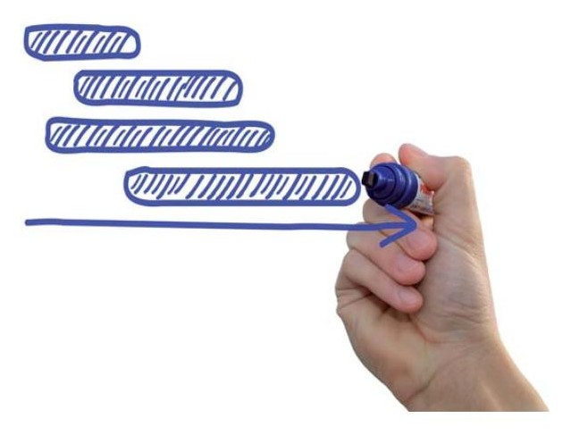
Los esquemas más habituales para la representación de los planning de obras son a través de diagramas, que atendiendo a su estructura pueden presentarse en formatos como:
Diagramas de Gantt o diagrama de barras.
Grafos: son representaciones mediante arcos y nodos, a su unión se la conoce por red del grafo.
El planning de obra debe cumplir la función de servir de documento básico no solamente para la planificación inicial, sino que también para el seguimiento y control de la ejecución de la obra.
Debe servir tanto al departamento de producción para la organización de los medios que deben estar disponibles como a otros estamentos de la empresa (financiero, contabilidad, personal, compras...) para prever sus necesidades capacidades y organizar los hitos que den lugar al lanzamiento de nuevas compras, altas de trabajadores, negociación con entidades financieras etc. Por tanto es un documento que tiene bases multidisciplinares.
No obstante cada departamento tendrá intereses concretos, de ahí que deben realizarse agrupados para determinados departamentos y en detalle para determinados otros. El nivel de detalle cara a la organización de la producción será mucho más preciso de cara a los departamentos mencionados, que solo estarán interesados en cómputos globales a algunos meses vista. De ahí que la estructura de un planning será de tipo agregada en lo que compete a varios meses, pero debe estar perfectamente determinada en el espacio temporal más próximo a varias semanas vista.
Al proceso por el cual un planning de obra agregado y calculado al espacio total de la obra pasamos a detallarlo de forma concreta en un espacio temporal más inmediato lo conocemos por desagregación, y con él obtendremos un planning detallado.
Definición
Desagregación: proceso por el cual un planning de obra agregado por capítulos, familias o similar lo descomponemos con detalles de ejecución de cada uno de ellos en espacios temporales próximos.
Creación del planning de obra
Para crear un plan se darán en general los siguientes pasos:
Supondremos que ante la planificación de una obra partiremos de un proyecto de obra con el contenido técnico necesario para poder conocer previamente y suficientemente detalle la obra a ejecutar. Este proyecto debe contener los siguientes documentos:
Memoria de proyecto y anexos: Será un documento descriptivo de donde puedan extraerse datos que determinen el objetivo a lograr, las exigencias y características de los elementos a instalar, cálculos justificativos de estos elementos, etc.
Planos y esquemas: Son de carácter fundamental para interpretar de modo correcto la forma que tiene nuestra obra eléctrica. Mostrarán los trayectos, puntos receptores, derivaciones, etc.
Mediciones y presupuesto: Constituyen un elemento básico para generar una planificación. En ellos entontaremos una primera estructura del proyecto, unidades de obras, lista de materiales, etc.
Pliegos de condiciones: Los diferentes pliegos de condiciones particulares, administrativas y técnicas dotarán de carácter contractual a la actuación.
En la primera etapa de un proyecto debe realizarse un la identificación del proyecto a ejecutar a partir de los anteriores documentos. Durante la identificación del proyecto, debe definirse las diferentes etapas o fases que implicará el proceso de ejecución de la obra.
Supongamos una obra sencilla desde el punto de vista de instalación eléctrica. Supongamos por ejemplo que se reformará la instalación eléctrica de una vivienda existente en la que renovamos completamente la instalación. Por tanto al ser una modificación no dependemos de fases previas a realizar por terceros, sino que nuestro proceso de montaje será independiente de otras empresas.
El proceso de montaje podría tener las siguientes fases:
Fases del proceso de montaje de una obra eléctrica independiente
Identificación del proyecto, planificación.
Replanteo de ubicaciones, trayectos y puntos significantes
Canalización de circuitos interiores
Instalación de conductores
Conexionado
Pruebas instalación
Habríamos definido con esto seis fases o etapas de proyecto relacionadas con el proceso de instalación de la obra. Estas fases no son independientes, pues cada una de ellas en general no puede realizarse sin haber finalizado la anterior (o al menos una parte de la anterior). Por tanto constituyen las etapas de montaje que debemos realizar para la consecución del proyecto estructurado en etapas o fases del montaje.
En un segundo paso de la planificación necesitaremos establecer el comienzo de la obra y los horarios del mismo. Toda planificación tendrá una fecha de comienzo, que puede ser libre o no serlo. En general el software de gestión
permitirá modificar a posteriori este dato, pero en sí es un dato de importancia capital si puede afectar a pedidos de materiales, contrataciones, etc.
Por otro lado toda planificación se integra dentro de un marco horario y calendario laboral previsto. Algunas obras pueden requerir por ejemplo alteraciones del horario habitual de la empresa para adaptarse al horario y calendario del conjunto de la obra. Igualmente pueden existir días festivos, puentes, etc. Conviene definir los parámetros horarios antes de definir cuestiones posteriores con objeto de que la estructura se mantenga común para todos los datos posteriores a introducir. Además en software de gestión de proyectos en pasos posteriores los cómputos de trabajo y asignaciones de recursos serán calculados en base a los horarios predefinidos siendo de suma importancia de cara a vinculación de las tareas a distintos recursos (de empleados por ejemplo).
En un tercer paso encaminado a la redacción de una planificación de la obra, debemos descomponer cada fase que hemos localizado del proyecto en las tareas necesarias para la consecución del montaje de la instalación.
Definición
Tareas: son los trabajos que serán necesarios ejecutar para la consecución del proyecto de instalación.
Así, antes de poder realizar el planning de obra necesitaremos descomponer los proyectos en las tareas que para nosotros va a implicar, agrupando o desagrupando éstas dentro de un orden manejable. Tareas diferentes o que ocurran en momentos no consecutivos de obra no deben ser agrupadas, mientras que un excesivo desglose de tareas puede producir problemas de planificación demasiado engorrosos y difíciles de gestionar. No obstante determinadas tareas se pueden agrupar a través de subtareas que detallen en mejor medida los trabajos a realizar dentro de una tarea principal. Esto producirá una estructura tipo árbol que nos permitirá manejar mejor el planning de una obra eléctrica.
Tareas y subtareas (vista subtareas)
Tarea 01 Replanteo
Subtarea 1 Replanteo puntos significantes
Subtarea 2 Replanteo de trazados
Subtarea 3 Replanteo receptores y derivaciones
Tareas y subtareas (vista tareas)
Tarea 01 Replanteo
Recuerda
Compartimentación: conocemos por compartimentación a la fase de un proyecto en que descomponemos en un número de tareas manejable las actividades a realizar en el mismo.
En los puntos siguientes comentaremos el modo en que descomponer estas tareas en función de las fases de obra e implicaciones de las mismas, así como aproximarnos al planning inicial de obras.
3.2. Replanteo de la obra, mediciones, cantidades
Los proyectos son documentos realizados por técnicos competentes para realizar el diseño y documentación del edificio o proyecto a construir. Durante su desarrollo se procura la definición total de los elementos que se requieren para la finalización de la construcción. Como cualquier documento realizado como una previsión pueden existir en ellos determinadas incertidumbres o cuestiones abiertas que aunque hayan quedado predefinidas sean susceptibles de ser reinterpretadas o mejoradas o sencillamente pueden modificarse en virtud de otros métodos que obtengan el mismo fin.
Además los proyectos incorporarán las unidades de obra a realizar, pero en general queda a libertad del contratista el modo de llevarlas cabo siempre que se cumplan los requisitos técnicos, administrativos y de seguridad que exigen los pliegos y su resultado sea coherente con el proyecto. De este modo la determinación las tareas a realizar y el modo de ejecutarlas deben determinarse por el contratista para lograr la mejor organización de los trabajos y un resultado con la calidad requerida. En general estas fases deben compartir con el resto de oficios o trabajos de la obra una organización común encaminada a la mejor consecución posible de los trabajos, y la costumbre es que la parte eléctrica de una obra no sea independiente del resto de trabajos, más bien todo lo contrario, se suele encontrar completamente supeditada a trabajos previos.
Por otra parte las mediciones de obra se entienden como una aproximación a las cantidades reales que se van a ejecutar, pero igualmente no serán exactas. Más bien se prefiere que en las mediciones de los proyectos exista cierta holgura por exceso en las mediciones para evitar que después de contratado el proyecto pudiera resultar no realizable en los términos del proyecto original. Suele aceptarse que las mediciones de obra difieran en entornos del 3-5% de la realidad. Otras diferencias pueden surgir durante el replanteo de obra. La palabra replanteo en sí tienen por significado volver a planear. En el caso de las obras no puede entenderse como la necesidad de volver a plantear la instalación.
Definición
Replanteo: Desde el punto de vista de obras el replanteo es la acción de trasladar la información contenida en proyecto al caso real.
Puede decirse que el replanteo es el caso contrario al del diseño. En el diseño estimamos unos parámetros y los reflejamos en documentos técnicos que dan la definición del edificio o instalación que se quiere construir. En el replanteo tomamos los documentos técnicos del edificio o instalación que se quiere realizar y los trasladamos a la realidad.
Durante el replanteo, la dirección técnica del proyecto y el contratista deben acordar los puntos físicos relevantes que servirán de base para la construcción del resto de elementos. Debe comprobarse que han quedado reconocidos sobre el terreno y que existe acuerdo entre ambas partes de que el proyecto tal y como se documentó inicialmente es realizable a partir de estos puntos representativos replanteados sobre el terreno. Dada la importancia de este acuerdo inicial suele documentarse el replanteo y firmarse por las partes. Habitualmente estos puntos significantes se dan sobre puntos determinantes de cimentación y estructura, y a partir de estos puntos se podrán referenciar los demás.
La actividad del replanteo puede en no pocas ocasiones dar lugar a pequeñas modificaciones en el proyecto original si por algún motivo se comprueba que no puede existir plena concordancia entre el proyecto y la ejecución o sencillamente si se localizar en la realidad circunstancias que puedan hacer aconsejable alguna modificación. De nuevo si este fuera el caso habría de documentarse y aprobarse por las partes.
En ocasiones pueden también detectarse dificultades de ejecución de determinados trabajos que hagan aconsejable realizar la actividad por otro medio o tecnología, o detectarse la necesidad de unidades de obras no detectadas inicialmente en el proceso de diseño de la obra, por lo que podrían surgir unidades de obras nuevas no contempladas inicialmente que si son de poca importancia relativa pueden considerarse como partidas de liquidación del proyecto.
Por ejemplo imaginemos que durante el replanteo del trayecto de la zanja por la que debe transcurrir una acometida eléctrica se encuentran dificultades en el terreno y se decide su modificación o ampliación. Este cambio puede provocar diferencias de medición o incluso puede requerir alguna nueva unidad de obra para garantizar la seguridad o similar. De este modo deben aceptarse por las partes estas nuevas unidades o modificación de medición para su posterior liquidación.
Por tanto en líneas generales diremos que durante el replanteo de obras debe quedar acordado si el proyecto es ejecutable en la realidad a partir de los planos originales, quedando determinados sobre el terreno puntos suficientes de referencia que permitan al director de obras y al contratista confirmar mediante acuerdo escrito la viabilidad de realizar el proyecto tal como se definió originalmente el proyecto. De no ser así, deben realizarse las modificaciones necesarias para que se llegue a ese acuerdo y documentarse dichas modificaciones para permitirnos la reorganización del planning de obra y el nuevo cálculo de sus necesidades, tareas, recursos, etc.
Destacar de todos modos que el replanteo no es el único momento que puede dar lugar a estas modificaciones, sino que en cualquier momento que a propuesta de cualquiera de las partes pueda encontrarse necesidades o modificaciones convenientes éstas pueden negociarse entre las partes y aprobarse si el caso lo aconseja. De todos modos el Replanteo sí es el momento idóneo, pues permitirá una planificación más limpia y menor necesidad posterior de cambios de pedidos de material, devoluciones, etc. que al final siempre redundan en retrasos nada deseables en las obras.
En el caso del replanteo de la parte de obra de carácter eléctrico deben quedar acordados los puntos significantes de la instalación. Los más importantes podrían ser:
Punto de conexión: en muchas ocasiones el punto de conexión de una instalación eléctrica puede estar predefinido, pero pendiente de aprobación por parte de la compañía distribuidora. Cuando es conocido el punto de conexión, es ideal pues puede dejarse aprobado de forma definitiva en el replanteo. Sin embargo no son pocas las obras donde no se conocen de forma definitiva. En muchos casos incluso los proyectos poseen una “partida alzada a justificar” para la acometida de obras. Este tipo de partidas poseen un presupuesto “alzado”, que tiene por objetivo servir como una previsión del coste máximo esperado para la partida. Es decir algo así como “en el peor de los casos” la acometida alcanzará ese valor. Sin embargo estas partidas no poseen detalles de medición ni de descompuestos. Por eso indica “a justificar”, es decir, una vez se conozcan los parámetros definitivos relativos al punto de conexión, se realizarán las mediciones ejecutadas y se justificarán con cargo a dicha partida alzada. Sobre el trazado de la acometida puede decirse los mismo, ya que las zanjas, postes o similares y los metros de cable necesarios dependen directamente de este punto de conexión.
Ubicación de la CGP: Se replanteará la ubicación de la Caja General de Protección, su posición exacta con respecto a alguna referencia existente ya en la obra en el momento del replanteo. Destacar que es más que normal que un proyecto defina el punto donde se ubica la CGP ya previamente, pero durante el replanteo se ven detalles como hacia donde debe quedar la apertura de la tapa, altura exacta, etc. Muchas veces al igual que los trazados, quedan además marcados mediante cintas marcadoras, pintura, tiza o similar todos los replanteos comentados entre la contrata y la dirección técnica de los trabajos. Si existe cualquier tipo de
dificultad para cumplir algún aspecto normativo, problemas de espacio, obstáculos o similar debe plantearse durante el acto de replanteo, proponiendo las partes las posibles alternativas aceptables y procurando llegar a acuerdos concretos. Debe recordarse por ejemplo que en la mayoría de edificios esta caja constituye el límite de propiedad entre zona pública y privada común del edificio, por lo que debe ser fácilmente accesible por ambas partes, quedando registrable desde el exterior del edificio.
Documentación de proyectos.
Trazado de la LGA: se determinará su trazado quedando marcado o al menos referenciada a puntos conocidos la Línea General de Alimentación. Es común por ejemplo que una línea general de alimentación pueda tener asignado un tipo de montaje (canalización), por ejemplo tubos enterrados, pero que luego a lo largo de su recorrido tenga que discurrir por otros tipos de paramentos o conducciones para atravesar determinados obstáculos como huecos, o rodeos de la estructura, etc. y muchos de estos detalles no estén plenamente definidos en los documentos de proyecto.
Ubicación de centralización de contadores: de nuevo es común que en proyectos quede indicado la ubicación de este punto significante de la instalación. Sin embargo detalles como la estructura del mismo, alturas, cotas entre partes móviles como puertas, sentidos de la apertura de éstas y detalles de similares características pueden y deben concretarse durante la operación de replanteo.
Para la instalación interior del mismo modo conviene señalizar los trazados, puntos de instalación de receptores, ubicación de CGMP, tipo de caja, sentidos de apertura de sus tapas, etc. Es común por ejemplo
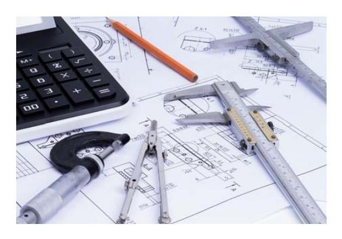
que pueden comentarse aspectos como sentidos y ubicaciones de las cajas de derivación. Una caja de derivación de un circuito interior puede normalmente quedar registrable hacia una estancia u otra sin afectar a la instalación por lo que se suele dar prioridad a su instalación hacia estancias donde sean menos visibles o menos molestas.
Durante el replanteo deben evitarse cruces de trazados para evitar que en un único paramento tengan que existir el espesor de dos tubos diferentes de circuitos distintos. Debe procurar lograrse que los tubos destinados a unir diferentes cajas de derivación y o receptores o elementos interruptores discurran paralelamente sin cruzamientos. Del mismo modo debe evitarse que paramentos de menor entidad como tabiques ubican excesivos tubos por ellos, dado que la realización de regolas sobre ellos pueden producir pérdida de material excesivo y por tanto comprometer su estabilidad o degradar el aspecto visual por recrecimiento del revestimiento en determinados puntos conflictivos del paso tubos. Todos estos aspectos importantes deben replantearse correctamente pues resulta casi imposible definir o esquematizarlos completamente en planos, y del mismo modo en muchas ocasiones de la realidad se producen dificultades no previstas durante la ejecución del diseño y proyectado de la instalación.
Definición
Receptor: Aparato o máquina eléctrica que utiliza la energía eléctrica para un fin determinado. Son por tanto los elementos finales a alimentar desde nuestra instalación.
Mecanismo eléctrico: Los enchufes (tomas), interruptores, conmutadores, pulsadores y cruzamientos constituyen lo que se denominan mecanismos eléctricos. El mecanismo completo suele estar compuesto del mecanismo, tapa, bastidor y marco y cerquillo.
Los mecanismos pueden ser empotrados, de superficie, libres o incluso móviles cuando éstos se encuentran integrados en el propio cable.
Cajillo o caja de mecanismos: Es el elemento que se emplea más comúnmente para la ubicación de un mecanismo eléctrico. Dado que se emplean en su ubicación tipo empotrada, que es en general la más utilizada. En función del tipo de material soporte pueden encontrarse distintos tipos de cajillos.
En relación a los tipos de montajes definiremos también:
Definición
Canalización eléctrica: Conjunto constituido por uno o varios conductores eléctricos y los elementos que aseguran su fijación y, en su caso, su protección mecánica.
Otros aspectos de mediciones y precios:
Así mismo en los pliegos de condiciones de las obras debe especificarse en qué modo se resolverán las discrepancias que se hayan hallado durante el replanteo, en el sentido de cómo se medirán las desviaciones que se hallen en unidades de elementos o medición de obras. Pueden darse circunstancias diferentes en función de estos pliegos. En general una obra puede ser:
A precio cerrado: En obras de importancia es poco recomendable, pero pueden encontrarse obras donde el presupuesto es cerrado y por tanto no se aumentaría el precio a cobrar por el contratista en caso de existir divergencia entre las mediciones de obra del proyecto y las realmente ejecutadas. Dado que es más que posible que durante los replanteos o las ejecuciones se encuentren supuestos difíciles de prever que aconsejen modificaciones o cambios, el precio cerrado suele suponer un riego para el contratista sobre la viabilidad económica de su trabajo.
A precio abierto: En este caso la medición del proyecto es una medición de referencia, y la cantidad a liquidar realmente al contratista será la que certifiquen los servicios técnicos de la dirección de obras. En obras de entidad esta es la fórmula más utilizada, de modo que el ajuste de obra realmente ejecutada será la que el contratista tenga derecho a cobrar.
No obstante los anteriores conceptos se refieren a las mediciones de obra, no a los precios. Es decir en caso de precio abierto el contratista cobrará los trabajos de las partidas en función de la certificación realmente certificada en base a los precios de la oferta que este mismo realizó. Mediciones superiores a las originales darían lugar a pagos mediante liquidación por exceso de medición. Si por el contrario la obra final hubiera requerido menos medición de la estimada el resultado de la certificación final estaría por debajo de la previsión del proyecto original.
La finalización del replanteo supondrá para el contratista de obras el momento idóneo para revisar las unidades y mediciones estimadas inicialmente y en caso de necesidad recalcular y perfeccionar la planificación inicial propuesta con los nuevos datos obtenidos.
Sin embargo también pueden definirse en los pliegos revisiones de precios. Si un determinado precio de mediciones no cubriera los gastos reales en que incurrirá un contratista en adquirirlos puede darse una situación de revisión de precios. Determinados pliegos no admiten estar revisiones de precios.
En el caso de obras públicas existen índices y fórmulas de revisiones de precios para salvaguardar a los contratistas de variaciones sustanciales de precios en el mercado. Casos como el cobre, el acero o el hormigón están sometidos a constantes cambios de valor en el mercado, y éstos pueden suponer que desde que se firma un contrato de obras hasta que realmente se ejecuta puedan haber existido variaciones de precios importantes, que según el caso deban ser revisados para permitir su realización.
También pueden encontrarse trabajos que requieran más actividades de las previstas en las partidas originales para su realización. En estos casos se requerirá justificación de los contratistas a través del director de obras de precios contradictorios sobre las partidas que no cubren gastos bien porque requieren actividades auxiliares no previstas bien porque puedan encontrarse por debajo del valor real de mercado. Los precios contradictorios deben ajustarse a justificación demostrable por el contratista y ser aceptadas por la dirección de las obras y el promotor para ejercitarse en su caso el pago posterior.
Recuerda
Las revisiones de precios y las fórmulas para las mismas afectan definitivamente al modo en que las obras se miden y ejecutan por parte de la empresa instaladora, debiendo estar definidas en los pliegos de condiciones el modo en que se tratarán los aspectos de precios, revisiones, excesos de medición, partidas complementarias, etc.
Por otra parte es común también que los pliegos de condiciones especifique la necesidad de someter a aprobación los elementos escogidos por el contratista para la instalación definitiva de receptores finales, como mecanismos, luminarias, etc. Desde el punto de vista del contratista de la obra, cuanto antes sean resueltos estos aspectos abiertos, mejor gestión de la planificación y del almacenamiento de materiales se logrará.
Finalmente en todos los casos existirán:
Mediciones de obra del proyecto original: Estructuradas en capítulos y partidas con sus respectivos descompuestos, rendimientos y precios medidos en unidades apropiada a cada partida, constituyendo una base de datos de unidades de obra a realizar, así como sus precios y rendimientos.
Mediciones de obra tras replanteo: Sean iguales o no a las de proyecto se podrán realizar por el contratista estas mediciones para poder detectar las diferencias previstas en la obra así como servir de cálculo para pedidos, cantidades de obra, unidades a realizar, etc. Estas mediciones deben servirnos además para la mejora de nuestro planning y en su caso para solicitar las revisiones de precios, contradictorios, u otros aspectos que requieran justificación ante el director de obras, promotor, etc.
Forma de realización de las mediciones
Las mediciones de obras comienzan inicialmente con las mediciones del proyecto. Estas mediciones habrán sido realizadas por el técnico redactor del proyecto en base a los documentos del proyecto. Es habitual que las mediciones así realizadas incluyan por tanto simplificaciones o aproximaciones a la realidad mediante métodos suficientemente sencillos para la realización de las mismas, y no suelen por tanto ser completamente exhaustivas. Más bien suelen basarse en las medias que los propios bancos de precios incorporan para la estimación por ejemplo de metros de cable por cada punto receptor o mecanismo necesario.
La posibilidad de medir la obra a través de los puntos receptores y tomas necesarios, mejora la sencillez del método de medición para los proyectos desde el punto de vista del diseñador. Sin embargo, para la organización instaladora éste método permite una buena aproximación general, pero no resulta completamente exhaustiva de cara a las necesidades reales de pedido de materiales y estimación precisa de los mismos.
A continuación veremos algunos ejemplos.
Medición de punto de luz sencillo, encontramos para punto de luz sencillo la siguiente medición en banco de precios dentro de la gama de calidad estándar:
“Punto de luz sencillo realizado con tubo PVC corrugado de M 20/gp5 y conductor rígido de 1,5 mm2 de Cu., y aislamiento VV 750 V., incluyendo caja de registro, caja de mecanismo universal con tornillos, interruptor unipolar , instalado.”
Y cuyo descompuesto de partida nos muestra:
Descompuestos de medición de un punto de luz sencillo en banco de precios
| Código | Naturaleza | Ud. | Descripción | Medición | Precio | Total | |||
|---|---|---|---|---|---|---|---|---|---|
| mO01OB240 | MO | h | Oficial 1a electricista | 0,35 | 18,52 | 6,48 | |||
| mO01OB260 | MO | h | Ayudante electricista | 0,35 | 17,34 | 6,07 | |||
| mP01D150 | Mat | ud | Pequeño material | 1 | 1,25 | 1,25 | |||
| mP15GA010 | Mat | m | Cond. rígi. 750 V 1,5 mm2 Cu | 16 | 0,25 | 4 | |||
| mP15GB010 | Mat | m | Tubo PVC corrugado M 20/ gp5 | 8 | 0,18 | 1,44 | |||
| mP15GK010 | Mat | ud | Caja mecan. empotrar enlazable | 1 | 0,3 | 0,3 | |||
| mP15ME010 | Mat | ud | Interruptor unipolar | 1 | 2,51 | 2,51 | |||
| mP15ME110 | Mat | ud | Pieza intermed.mod.ancho (bco.nieve) | 1 | 0,28 | 0,28 | |||
| mP15ME120 | Mat | ud | Placa mod.ancho s/garras c/ bastidor | 1 | 1,55 | 1,55 | |||
| %CI | Otro | % | Costes Indirectos | 0,239 | 3 | 0,72 |
Por tanto para la instalación de un punto de luz sencillo, el banco de precios prevé las necesidades recogidas en la tabla anterior. Observamos que la medición estima en 8 metro lineales la necesidad de recorrido de la línea y 16 metros de conductor. Sin embargo lógicamente la necesidad real de metros de línea y cable en una instalación real dependerá del tamaño de cada habitación y será diferente en cada habitación de tamaño distinto.
Medición de punto de luz conmutado, encontramos para punto de luz conmutado la siguiente medición en banco de precios también dentro de la gama de calidad estándar:
“Punto conmutado sencillo realizado con tubo PVC corrugado de M 20/gp5 y conductor rígido de 1,5 mm2 de Cu, y aislamiento VV 750 V., incluyendo caja de registro, cajas de mecanismo universal con tornillos, conmutadores, instalado.”
Y cuyo descompuesto de partida nos muestra:
Punto de luz conmutado
| Código | Naturaleza | Ud. | Descripción | Medición | Precio | Total | |
|---|---|---|---|---|---|---|---|
| mO01OB240 | MO | h Oficial 1a electricista | 0,5 | 18,52 | 9,26 | ||
| mO01OB260 | MO | h Ayudante electricista | 0,5 | 17,34 | 8,67 | ||
| mP01D150 | Mat | ud Pequeño material | 1 | 1,25 | 1,25 | ||
| mP15GA010 | Mat | Cond. rígi. 750 V 1,5 mm2 m Cu | 39 | 0,25 | 9,75 | ||
| mP15GB010 | Mat | Tubo PVC corrugado M 20/ m gp5 | 13 | 0,18 | 2,34 | ||
| mP15GK010 | Mat | Caja mecan. empotrar ud enlazable | 1 | 0,3 | 0,3 | ||
| mP15ME020 | Mat | ud Conmutador | 1 | 3,16 | 3,16 | ||
| mP15ME110 | Mat | Pieza intermed.mod.ancho ud (bco.nieve) | 1 | 0,28 | 0,28 | ||
| mP15ME120 | Mat | Placa mod.ancho s/garras c/ ud bastidor | 1 | 1,55 | 1,55 | ||
| %CI | Otro | % Costes Indirectos | 0,366 | 3 | 1,1 |
De los anteriores descompuestos se observa que se han previsto 13 metros de tubo y 39 metros de conductor para todo punto de luz conmutado. De nuevo resulta una estimación válida para el caso general, pero de cara a una medición de instalador, será necesario aproximar mejor el caso real que ocupe a través de una estimación de metro basada en las distancias reales que se van a requerir, pues no todos los puntos de luz conmutados consumirán esta cantidad.
En el caso de puntos de luz con cruzamiento tenemos la siguiente definición:
Punto cruzamiento realizado con tubo PVC corrugado de M 20/gp5 y conductor rígido de 1,5 mm2 de Cu., y aislamiento VV 750 V., incluyendo caja de registro, cajas de mecanismo universal con tornillos, conmutadores y cruzamiento, instalado
Cuyo descompuesto muestra:
Esquema: punto de luz con cruzamiento:
| Código | Naturaleza | Ud. | Descripción | Medición | Precio | Total | |||
|---|---|---|---|---|---|---|---|---|---|
| mO01OB240 | MO | h | Oficial 1a electricista | 0,55 | 18,52 | 10,19 | |||
| mO01OB260 | MO | h | Ayudante electricista | 0,55 | 17,34 | 9,54 | |||
| mP01D150 | Mat | ud | Pequeño material | 1 | 1,25 | 1,25 | |||
| mP15GA010 | Mat | m | Cond. rígi. 750 V 1,5 mm2 Cu | 72 | 0,25 | 18 | |||
| mP15GB010 | Mat | m | Tubo PVC corrugado M 20/gp5 | 18 | 0,18 | 3,24 | |||
| mP15GK010 | Mat | ud | Caja mecan. empotrar enlazable | 1 | 0,3 | 0,3 | |||
| mP15ME030 | Mat | ud | Conmutador cruce | 1 | 7,59 | 7,59 | |||
| mP15ME110 | Mat | ud | Pieza intermed.mod.ancho (bco.nieve) | 1 | 0,28 | 0,28 | |||
| mP15ME120 | Mat | ud | Placa mod.ancho s/garras c/bastidor | 1 | 1,55 | 1,55 | |||
| %CI | Otro | % | Costes Indirectos | 0,519 | 3 | 1,56 |
En la anterior descomposición observamos que la partida ha tenido en cuenta un total de 72 metros de conductor y 18 metros de tubo, como estimación del punto de luz con cruzamiento.
Similarmente ocurrirá con las tomas de enchufe. En un proyecto real existirán distintas bases de enchufe simples, dobles, triples, y los metros exactos de instalación para tomas podrán ser diferentes en función de su cantidad total, su distancia a las cajas de derivación, y de qué circuito interior de conexión se trate cada una de ellas, sin embargo en muchas mediciones de proyectos nos encontraremos sencillamente el número de ellas medidas a través de una partida de descompuesto fijo, la cual durante la preparación de la obra será conveniente que el instalador realice su propia actualización de mediciones adaptadas al caso real a través de medición más exacta del caso concreto de la instalación.
La partida genérica la podemos encontrar como: Base de enchufe, con la siguiente descripción:
“Base de enchufe con toma de tierra lateral realizada con tubo PVC corrugado de M 20/gp5 y conductor rígido de 2,5 mm2 de Cu., y aislamiento VV 750 V., en sistema monofásico con toma de tierra (fase, neutro y tierra), incluyendo caja de registro, caja de mecanismo universal con tornillos, base de enchufe sistema schuko 10-16 A. (II+t.), instalada.”
Y su correspondiente descompuesto como:
Descompuestos de medición de base de enchufe en banco de precios
| Código | Naturaleza | Ud. | Descripción | Medición | Precio | Total | |
|---|---|---|---|---|---|---|---|
| mO01OB240 | MO | h Oficial 1a electricista | 0,45 | 18,52 | 8,33 | ||
| mO01OB260 | MO | h Ayudante electricista | 0,45 | 17,34 | 7,8 | ||
| mP01D150 | Mat | ud Pequeño material | 1 | 1,25 | 1,25 | ||
| mP15GA020 | Mat | m Cond. rígi. 750 V 2,5 mm2 Cu | 18 | 0,42 | 7,56 | ||
| mP15GB010 | Mat | m Tubo PVC corrugado M 20/gp5 | 6 | 0,18 | 1,08 | ||
| mP15GK010 | Mat | ud Caja mecan. empotrar enlazable | 1 | 0,3 | 0,3 | ||
| mP15ME080 | Mat | ud Base e. bipolar con t.t. ltral. | 1 | 3,38 | 3,38 | ||
| Pieza intermed.mod.ancho | |||||||
| mP15ME110 | Mat | ud (bco.nieve) | 1 | 0,28 | 0,28 | ||
| mP15ME120 | Mat | Placa mod.ancho s/garras c/ ud bastidor | 1 | 1,55 | 1,55 | ||
| %CI | Otro | % Costes Indirectos | 0,315 | 3 | 0,95 |
Donde podemos observar que se ha realizado la estimación como 6 metros por cada toma.
Existirán diferentes enfoques posibles para la realización de una medición propia de instalador para la correcta estimación de las necesidades materiales y de trabajo para su propio control de cantidades de pedidos. Por ejemplo pueden reconfigurarse las partidas en función de la naturaleza material, a través de la medición total de cada tipo mecanismos, cada tipo de línea, etc.
En definitiva, en la mayoría de proyectos se generará una segunda medición diferente a la de proyecto para la estimación por parte del instalador y su propio control interno de los materiales de obra y ejecución de los trabajos.
Tomas enchufe
Recuerda
Las mediciones de proyectos suelen realizarse en base a los bancos de precios y unidades de receptores, puntos de luz, etc. resultando una aproximación a la realidad a través de las medias de longitud que estos puntos tienen.
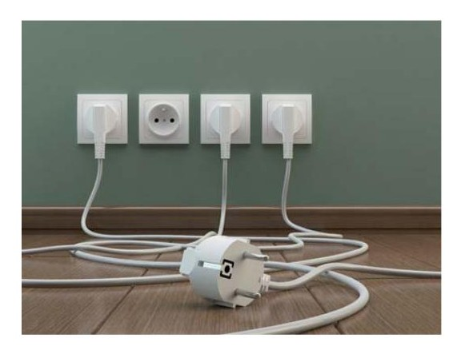
3.3. Tareas a realizar
Las tareas dentro de un proyecto son trabajos concretos que son necesarios realizar para la consecución de una parte de las transformaciones necesarias para completar el proceso de montaje. Cada tarea reconocida durante el proceso de compartimentación definido anteriormente debe ser de una naturaleza común.
Un índice de las tareas a realizar lo podremos encontrar en forma aproximada a través de las mediciones de obra. En general los capítulos y partidas de obra serán o pueden ser una guía inicial para comenzar la compartimentación, aunque en sí los capítulos de obra no son tareas, si pueden ayudarnos a detectar en cada uno de ellos cuáles serán nuestras tareas. En los casos de obras nuevas pueden existir tareas propias del oficio de electricidad aunque las mismas no supongan propiamente ninguna ejecución por nuestra parte. En muchas ocasiones la empresa de instalación eléctrica debe intervenir en pro de prever necesidades en capítulos de obras tan elementales como movimiento de tierras, cimentación o estructura. Por ejemplo la instalación de protección y toma de tierra puede ser una tarea propia de estos inicios que conviene que se realice con ajuste a las necesidades de nuestra posterior intervención. Dado que es de nuestro interés es muy recomendable que la planificación y el estudio de métodos y necesidades se encuentren realizados desde los inicios de la intervención general.
Del mismo modo los trazados que requieran zanjas deben estar presentes desde el replanteo de la obra inicial para evitar que se dejen atrás previsiones de trabajos a realizar que puedan entorpecerse más adelante. Por tanto aunque una organización se dedique exclusivamente a una actividad dentro de una obra de mayor envergadura, su participación debe ser activa en diversos momentos de la obra en su conjunto.
Podremos estudiar cada capítulo en orden a reconocer las tareas a realizar dentro de cada uno de ellos. En general durante la compartimentación interesa que las tareas a realizar puedan ser homogéneas en los posible en cuanto a cantidad de recursos pues siempre existen costes asociados a contrataciones o despidos en obra o al empleo de recursos auxiliares, por lo que cuanto más homogéneo seamos capaces de organizar las tareas, mayor estabilidad de ejecución lograremos para una capacidad dada.
Esto obviamente puede resultar difícil en algunos momentos de la obra pero ya desde la compartimentación es aconsejable tener en cuenta este principio de estabilización de capacidad y carga de trabajo.
En los casos de obra nueva la mayoría del trabajo se encuentra a partir de que pueden instalarse las canalizaciones eléctricas, y la mayor parte de la carga de trabajo en una obra eléctrica por tanto debe esperar a que se encuentren ejecutados los paramentos sobre los que luego puedan ubicarse éstas canalizaciones eléctricas. Esto complica las planificaciones desde el punto de vista que las fechas previstas varían en función del discurrir general de las obras.
En cualquier caso la división en fases sí nos permitirá planificar las actividades a realizar dentro de cada fase, aunque posteriormente deban adaptarse las fechas reales. Partiremos de las mediciones de obra para tener cómputo de las unidades a ejecutar.
Tomaremos de nuevo el ejemplo de realización de una obra sencilla de realización de una obra eléctrica de modificación de instalación interior de 10 viviendas existentes, en la que realizaremos tanto los trabajos de oficio eléctrico como los de albañilería y auxiliares. Tomaremos las fases de obra denotadas anteriormente.
Fases del proceso de montaje de una obra eléctrica independiente
Identificación del proyecto, planificación
Replanteo
Canalizaciones de circuitos interiores
Instalaciones de conductores
Conexionado
Pruebas instalación
Supuesto de fases del proceso de montaje de una vivienda:
Supondremos la realización de una vivienda de electrificación básica. La identificación del proyecto a ejecutar nos lleva por tanto a considerar los siguientes cinco circuitos interiores.
Circuitos independientes:
C1 Circuito de distribución interna, destinado a alimentar los puntos de iluminación.
C2 Circuito de distribución interna, destinado a tomas de corriente de uso
general y frigorífico.
C3 Circuito de distribución interna, destinado a alimentar la cocina y horno.
C4 Circuito de distribución interna, destinado a alimentar la lavadora, lavavajillas y termo eléctrico.
C5 Circuito de distribución interna, destinado a alimentar tomas de corriente
de los cuartos de baño, así como las bases auxiliares del cuarto de cocina.
Todos ellos alimentados desde una caja general de mando y protección a instalar, desde una línea de derivación individual ya existente de un conductor de fase, un neutro y un cable de protección (tierra) de sección 6 mm2.
A continuación trataremos de reconocer las actividades a realizar por cada una de las fases de obra a realizar:
Replanteo de obra.
Canalización de circuitos interiores.
Instalación de conductores.
Conexionado.
Pruebas de instalación.
Imaginemos que existen unas mediciones de obra para la realización de este trabajo con las siguientes características:
Medición de montaje de instalación de vivienda
| Partida | Ud. | Descripción | Medición |
|---|---|---|---|
| 1 | ud CUADRO PROTEC.ELECTRIFIC. BÁSICA | 1 | |
| 2 | m CIRCUITO MONOF. POTENCIA 10 A. | 25 | |
| 3 | m CIRCUITO MONOF. POTENCIA 16 A. | 20 | |
| 4 | m CIRCUITO MONOF. POTENCIA 20 A. | 15 | |
| 5 | m CIRCUITO MONOF. POTENCIA 25 A. | 8 | |
| 6 | Ud MECANISMOS | 1 | |
| 7 | ud AYUDA ALBAÑ. INST. ELECTRIC.(c/100 m2 CONST.) | 1 | |
| 8 | m2 P. PLÁST. LISA MATE ESTÁNDAR OBRA B/COLOR | 270 |
Obra de vivienda
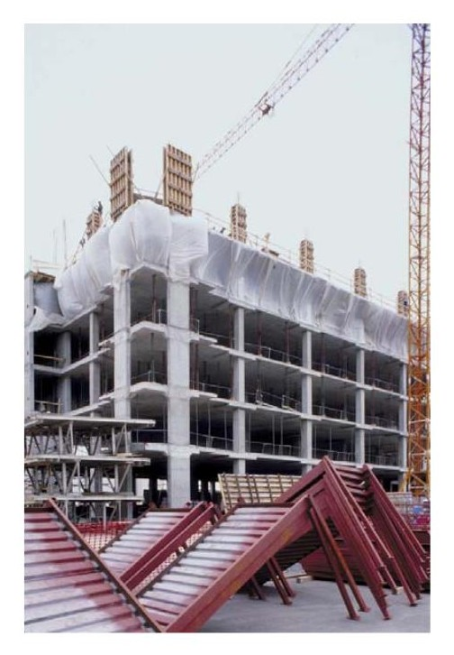
Disponiendo entonces de las fases del proyecto y de las unidades de obra a ejecutar, trataríamos de localizar las actividades dentro de cada una de ellas en tareas y subtareas.
Replanteo de obra: desde el punto de vista del replanteo de obra la actividad a realizar es el propio replanteo, por lo que no suelen dividirse subtareas para el mismo. Se entenderá que durante el replanteo quedarán acordados de forma exacta los trayectos y puntos exactos de ubicación de los elementos, quedando indicados mediante pintura o similar sobre las paredes de la vivienda.
Canalización de circuitos interiores: implicará las tareas de instalación de conductos, cajas de derivación, cajillos: Las tareas a realizar para esta fase serán las propias de apertura de rozas y huecos para las cajas e instalación de las mismas, colocación de estos elementos, así como el cierre de las mismas una vez colocados los elementos Desde el punto de vista de la planificación y dado que estos trabajos requerirán por ejemplo un tiempo de secado posterior en nuestro caso, debemos tener en cuenta este punto dentro de la planificación. Los trabajos a realizar pueden suponerse secuenciados es decir, que hasta que no termine la apretura de rozas, no se coloquen elementos, y hasta que no estén colocados no se proceda al cierre del revestimiento, o de forma paralela, es decir, por cada regola abierta se coloca el elemento y se cierra. Lo cierto es que en las obras en general es recomendable realizar las tareas de forma secuenciada, pues cada tarea implicará una serie de medios auxiliares que suelen recomendar este formato. De todos modos veremos que si empleamos distintos recursos a la vez en ocasiones puede haber una determinada cuadrilla haciendo un trabajo, mientras otra va justo por detrás realizando las siguientes. En este segundo caso se podrías realizar la tereas en paralelo.
Comparando con el esquema de mediciones entramos la relación con la partida ayudas de albañilería, y cuya descripción tenemos:
“Ayuda de albañilería a instalación de electricidad por cada 100 m2 construidos, incluyendo mano de obra en carga y descarga, materiales, apertura y tapado de rozas, recibidos, remates y ayudas a puesta a tierra, caja general de protección, línea general de alimentación, contador en fachada, derivaciones individuales y cuadros de mando y protección, i/p.p. material auxiliar, limpieza y medios auxiliares.(20% sobre instalación de electricidad).”
Lo cual constituye una descripción coherente con los trabajos a realizar en esta fase. No obstante debe tenerse encuentra que en mediciones, el material necesario para la realización de esta partida no se encuentra
dentro de la unidad especificada sino como parte proporcional de los circuitos monof. En el caso de la colocación de la CGMP se encontrará dentro de la partida CUADRO PROTEC.ELECTRIFIC. BÁSICA, de ahí que las mediciones de proyecto no representan fielmente el orden de la planificación, sino tan solo una guía de los trabajos agrupados con respecto a la medición de obra, en lugar de respecto a la secuenciación de los trabajos. De ahí la necesidad de realización de una planificación detallada por parte del instalador.
Instalación de conductores. Implicará la labor de instalación de los conductores a través de las canalizaciones dispuestas previamente. En general se realizará la tarea de la instalación de conductores mediante el paso de guías y posterior paso de cables. No suele realizarse las conexiones directamente sino que se dejan los sobrantes de cable en las cajas y cajillos hasta su posterior conexión. Por tanto podemos no dividir más de una sola tarea de colocación de conductores. Sin embargo, y dado que antes de la colocación definitiva de los mecanismos sería necesario el oficio de pintura, incluiremos aquí una subtarea del pintado de las paredes. En general el oficio de electricidad se considera un oficio “limpio” dentro de una obra, pero para evitar posibles roces con paredes, etc. durante el tendido de los conductores suele realizarse la pintura a posteriori. Para evitar realizar la tarea doble desmontaje y posterior montaje de los embellecedores de los mecanismos y dado que ambos oficios serán abordados por nuestra propia organización vamos a suponer que el pintado se realice antes de la colocación de los mecanismos. No obstante, dado que el pintado de las cajas de derivación es conveniente que se realice antes que la pintura con lo que puede incluirse también aquí el conexionado de cajas de derivación para dejar su instalación de forma definitiva previamente al pintado. Por tanto tendríamos en esta fase: instalación de conductores, conexionado de cajas de derivación, pintura.
Importante
Obsérvese que siempre hay diversas formas de establecer una planificación, y algunas de las secuenciaciones dependerán de las preferencias del organizador del planning.
Conexionado: implicará las tareas de corte del conductor a la longitud requerida, pelado del terminal en el entorno necesario para su posterior conexionado, conexión a mecanismos y colocación del mecanismo y posteriormente conexión de las protecciones y los circuitos en la CGMP. Podemos aunar en una sola tarea todos ellos: conexión de mecanismos, conexión de cajas de derivación y conexionado del CGMP, etc.
Se verificará la instalación y se realizarán las pertinentes pruebas de funcionamiento, que consideraremos igualmente una única tarea sin considerar ninguna subtarea.
Por tanto la estructura del planning que se construiría tendría la siguiente estructura:
Replanteo Canalización Conductores Conexionado Pruebas
Apertura
rozas
Colacacion canalización
Instalaciones
conductores
Replanteo
Conexión cajas deriv.
Tapado rozas
Conexión mecanismos
Pintado
Conexión
CGMP Pruebas
De este modo se muestran 10 tareas integradas en cinco etapas para el proceso de montajes de de una obra eléctrica.
Obra estado intermedio
Tal como hemos comentado existen distintas formas operativas de gestionar un planning de obra y existen multitud de factores que afectan a la organización del proceso. Consideraciones de planificación pueden ser:
Independencia del planning: uno de los factores que afecta más definitivamente a un planning de obras es la interconexión con el planning de la obra general cuando esta no es parte de nuestra intervención. En estos casos nuestra organización actuaría con carácter de subcontratista en dependencia de una contratar de obras principal, y en estos casos la planificación vendrá condicionada (y por tanto en dependencia) de la contrata principal. Resulta un problema de planificación de mucha mayor complejidad ya que implicará la obligación de esperar a que están realizados los trabajos previos necesarios y también que exista acuerdo con la contratar en cuanto a en qué momento podemos comenzar una determinada tarea u otra.
Dependencia de materiales: También pueden darse restricciones del tipo materiales. Si existen por ejemplo pedidos de elementos cuya fecha de entrega es posterior a nuestra previsión inicial habrá que adaptar el
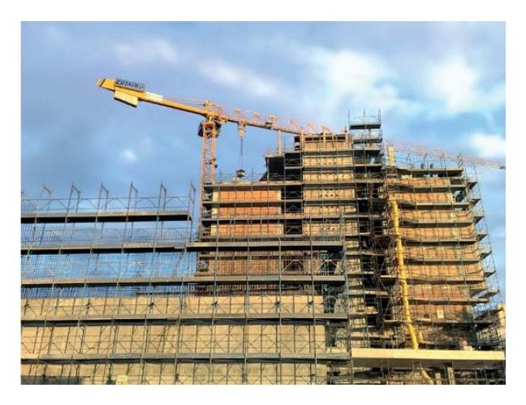
orden en que se hacen estas tareas, o retrasar el plan completo desde esa tarea en adelante.
Esta dependencia acostumbra a ser de vital importancia, por eso se emplean MRP para la mejora del estudio de las necesidades materiales de las obras, cuestión que abordaremos a continuación de esta sección.
Dependencia de Mano de obra auxiliar o materiales auxiliares: En aquellas obras en que los elementos auxiliares no dependan de nosotros, como ayudas de albañilería, maquinaria de elevación, etc. nuestro planning de obra estará también condicionado a la disponibilidad paralela nuestra y del gestor de estos elementos auxiliares, por tanto de nuevo puede condicionar el momento de inicio de determinadas tareas.
En general puede decirse que las planificaciones deben adaptarse constantemente a multitud de variables externas que pueden producir modificaciones sobre el plan, tratando de decidir en cada momento nuevas previsiones que se adapten a estas variables. En cualquier caso las tareas a realizar sí suelen permanecer estables durante todo el proceso, pues aunque pueden cambiar el momento que deben hacerse o en sus cantidades, lo normal es que siempre permanézcanlas mismas al menos cualitativamente. De forma extraordinaria sí pueden existir cambios de tareas cuando se modifican proyectos o se amplían trabajos de nuevas unidades de obra necesarias.
Recuerda
En una obra la mayoría de tareas a realizar no es libre ni independiente, sino que poseerán una interdependencia con otras actividades que a su vez pueden ser de nuestra organización o de terceros agentes. Llamamos secuenciación al orden relativo en que las tareas deben ocurrir.
La secuenciación que se decida para una planificación tratará de aunar diversos objetivos de empresa y lograr la optimización de los recursos así como el reparto lo mejor homogéneo posible para evitar cargas de trabajo excesivamente altas o excesivamente bajas.
Las tareas a realizar suelen ser además susceptibles de ser divididas o complementadas a otras, cuestión que modificaría la totalidad de la planificación. La gestión informática de los planning de obra ha mejorado notablemente los aspectos de adaptabilidad y obtención de óptimos en función de las variaciones de las variables externas que afectan al planning de obras, así como facilitar en un mismo diagrama el seguimiento económico de los trabajos a través de diagramas de seguimientos del planning con asignación de recursos de costes conocidos.
3.4. Provisión de materiales
Una de las planificaciones más importantes desde el punto de vista de la anticipación de acontecimientos mediante planificación será la previsión de cara a las necesidades de materiales. La provisión de materiales de una obra tiene que realizarse normalmente antes del replanteo de la obra, por lo que para la medición de las unidades a requerir de cada material debe partirse normalmente de las mediciones del proyecto. Dado que las mediciones de proyecto pueden albergar ligeras diferencias con el proceso real deberán ajustarse por parte del contratista a través de una medición propia que pueda contrastarse con los documentos del proyecto, sus planos y sus mediciones. La mayoría de mediciones de obras estarán en un formato tal que nos permita iniciar esta actividad mediante un listado de materiales.
En nuestro ejemplo anterior tendríamos el siguiente listado de materiales.
| Código | Medición | ud | Descripción | |
|---|---|---|---|---|
| 1 | 1 | ud | Caja empot.pta.blanca 1X12 | |
| 2 | 1 | ud | Int.aut.diferencial 2x40 A 30 mA | |
| 3 | 1 | ud | PIA (I+N) 10 A | |
| 4 | 2 | ud | PIA (I+N) 16 A | |
| 5 | 1 | ud | PIA (I+N) 20 A | |
| 6 | 1 | ud | PIA (I+N) 25 A | |
| 7 | 2 | ud | PIA 2x40 A | |
| 8 | 50 | m | Cond. rígi. 750 V 1,5 mm 2 Cu | |
| 9 | 60 | m | Cond. rígi. 750 V 2,5 mm 2 Cu | |
| 10 | 45 | m | Cond. rígi. 750 V 4 mm 2 Cu | |
| 11 | 24 | m | Cond. rígi. 750 V 6 mm 2 Cu | |
| 12 | 25 | m | Tubo PVC corrugado M 20/gp5 | |
| 13 | 43 | m | Tubo PVC corrugado M 25/gp5 | |
| 14 | 1 | Ud | Mecanismos gama media |
El listado de materiales es una tabla estática que nos permite listar las unidades y medición de los materiales directos que vamos a requerir para la finalización de una obra eléctrica. Como dato estático no nos da información a priori del momento en que estos materiales van a ser requeridos. Por tanto para la realización de una planificación de materiales, necesitaremos información de en qué momento van a realizarse los consumos efectivamente de estos materiales. Por otro lado en la organización pueden existir materiales en stock que coincidan en total o en parte con los materiales que vamos a requerir. De este modo para el desarrollo de una panificación de materiales necesitaremos emplear estas tres fuentes de origen de datos (lista de materiales, planning de obra (MPS) y stock) para la determinación de las necesidades de pedidos de materiales.
Además de los anteriores, en las mediciones aparecerán detalles de las unidades de materiales directos, pero otros materiales auxiliares no aparecerán, por lo que será necesario estimarlos. La mayoría de veces las obras eléctricas se miden como una estimación de metros de circuito interior en función del número de ellos que existen en la obra y se imputan unos metros medios a cada tipo de mecanismo o circuito. Sin embrago no suelen detallar el número de cajas de derivación a instalar, ni el número de fichas de conexiones que se necesitaran, el material auxiliar para sujeción de los mismos, etc.
Por tanto suele ser recomendable desde el punto de vista del instalador realizar una medición propia más ajustada a las cantidades de los materiales realmente necesarios con objeto de ajustar los pedidos de una forma más precisa.
Una vez obtenidas estas cantidades ajustadas se estará en disposición de realizar una planificación de materiales, conocida habitualmente como plan de requerimiento de materiales MRP.
Planificación de MRP
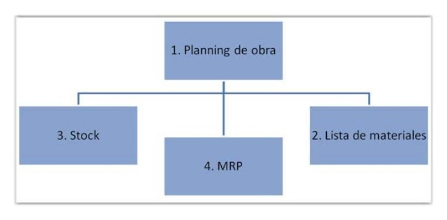
Una vez se obtenidas las necesidades materiales para la ejecución de la obra, con específico nivel de calidad y especificaciones técnicas debe comenzar la búsqueda de un proveedor con capacidad y competencia para servírnoslo.
Definición
Proveedor: Persona física o jurídica que nos abastece con un material, bien o servicio a nuestra organización. Procede del término proveer.
La búsqueda de proveedores puede darse en tres escenarios:
La empresa inicia la actividad.
La empresa ya tiene proveedores, pudiendo o no encontrarse en relación satisfactoria.
Se quiere ampliar la cartera de proveedores con el objeto de realizar comparativo y diversificar los proveedores.
La actividad de búsqueda tiene un coste inherente en tiempo de personal, por lo que el tiempo que se dedica a la búsqueda de proveedores así como su evaluación y selección debe ser proporcionado en costes a los beneficios que luego nos genere esta actividad. Por tanto los resultados deben mejorar la situación inicial por encima de estos propios costes.
En algunas organizaciones existen acuerdos preferentes con determinados proveedores que tienen por objetivo mejorar los costes a través de relaciones permanentes que aseguren buenas condiciones de compra evitando tiempos de evaluación y por tantos costes de evaluación y selección. En estos casos además pueden imprentarse sistemas más avanzados de comunicación con clientes CRM de sus siglas en inglés customer relationship management, y se puede facilitar la emisión de pedidos para minimizar los costes de realizar un pedido.
Cuando existen relaciones prioritarias consolidadas de este tipo, suele cambiarse el tratamiento de proveedor a una categoría superior denominada Partner. Normalmente esta categoría se referirá a proveedores que trabajan a un
nivel más de empresas de colaboración que de simple proveedor. Para ello las empresas negocian de forma más compartida los beneficios de los propios trabajos, de modo que parte del negocio pase a nuestro Partner. Este tipo de relación suele basarse en reparto de beneficios de las ventas, con objeto de mantener el interés mutuo de ambas empresas para un determinado trabajo. La mejora en la implicación de un partner asegura que se mantenga el interés de este en el cumplimiento de plazos de entrega, garantías de pedido, etc.
En cualquier caso, aunque se trabaje con proveedores al uso, proveedores preferentes o partners, toda empresa debe tener un ciclo de comparativo de proveedores para garantizar que sus precios de compra siguen manteniendo un pulso dentro del mercado, pues este aspecto es un aspecto fundamental para el correcto sostenimiento dentro de la competitividad mercantil.
Las fases de búsquedas de proveedores serán:
Búsqueda de información
Solicitud de información
Evaluación y selección
El proceso de negociación con proveedores también se divide en una serie de etapas como:
Inicio
Conocimiento
Argumentación y objeciones
Cierre
Según el estado de una relación con proveedores, negociación y las actitudes que toman las partes, se pueden clasificar en los siguientes tipos:
Negociación inmediata.
Negociación progresiva
Negociación en función de la importancia de la relación
Negociación acomodativa
Negociación colaborativa
Negociación evitativa
Negociación competitiva
Para la evaluación y selección de proveedores, la organización debe asignar criterios medibles y comparar en condiciones homogéneas las distintas ofertas. Para ello se establecerán pesos y ponderaciones entre los diferentes criterios de selección. También se establecerán criterios de descarte como puedan ser calidad de productos, especificaciones, formas de pago, etc.
El precio aparecerá siempre como un criterio de ponderación de relevancia dentro de estos comparativos, pero lógicamente tampoco debe ser el único. Habrá que tener en cuenta otros aspectos del proveedor del tipo:
Capacidad de cumplimiento por volumen
Descuentos comerciales por volumen, rappels, ...
Condiciones de pago
Plazos de entrega y servicio de entrega, portes, seguros,
Adaptación a pedidos mínimos convenientes,
Facilidad de pedido
Información mostrada en tiempo real
Atención al cliente
Distancia de sus centros de distribución a nuestros puntos de trabajo
Etc.
Por otro lado el desarrollo del MRP estará íntimamente ligado al planning de obra y a la asignación de recursos de este plan (programación del planning de obra a través de una plan maestro de producción MSP). Su evolución marcará no solo el momento inicial en que deben estar disponibles los recursos sino también los distintos periodos de tiempo a tener en cuenta para el almacenamiento y ciclo de pedidos, y las rectas de consumo en estos periodos. Para grandes periodo suele interesar linealizar las necesidades a lo largo de los periodos para facilitar el cálculo del almacenamiento que vamos a requerir y cálculos los volúmenes de pedidos óptimos. Cuando hablamos de linealizar nos referimos a suponer que el consumo de los productos es constante dentro de un plazo determinado, normalmente entre dos hitos de proyecto en que una determinada tarea debe ser realizada.
La relación de hitos en que dé comienzo una determinada actividad dentro del planning de la obra marcará las fechas en que los pedidos de materiales habrán de estar disponibles en la obra. Por tanto el MRP, será otra planificación que tendrá por tareas la realización de pedidos de material, y su objetivo es que los materiales se encuentren siempre en stock antes de la fecha del hito concreto.
Podría pensarse que ya que las necesidades de pedido de material son conocidas en los inicios de las obras podríamos estar en disposición de solicitar cuanto material vayamos a requerir. Sin embrago la obligación de mantener unos niveles de existencias proporcionados y cercanos a una situación óptima entre cubrir la demanda y los costes asumidos para ellos, no obliga a una gestión más personalizada de cada obra. Este equilibrio debe darse entre diversos factores que tienen que ver con la gestión de almacenes. Por un lado un almacenamiento excesivo nos provocará gastos del tipo:
Mantenimiento de almacenes y sus gastos asociados.
Gastos financieros de haber realizado la compra antes de poder instalarla y certificarla.
Posible pérdida de valor de los productos durante el almacenamiento.
Etc.
Por estas circunstancias los volúmenes de pedidos dentro del plan de requerimiento de materiales tienen que tener cierta aproximación a un equilibrio de ente estos factores que intervienen.
De otro lado y ya que se debe garantizar que el pedido esté disponible en el momento del hito de inicio de la actividad que lo requiere, entrará en juego el tiempo de pedido de los materiales. El tiempo de pedido de los materiales es el tiempo mínimo que se requiere para realizar el pedido del material unido al tiempo del plazo de entrega que puede garantizarnos nuestro proveedor. Como estos tiempos siempre pueden tener cierta incertidumbre, deben tomarse las precauciones necesarias para que nuestro hito de realización del pedido, posea suficiente holgura respecto al hito de necesidad del material en obra. El tiempo de pedido incluirá dos términos:
Tiempo de pedido dentro de nuestra organización: Será el tiempo requerido para la realización de la documentación del pedido y su aprobación. En muchas organizaciones el pedido de materiales no es libre, sino que está supeditado a aprobaciones por parte de otros departamentos como el financiero, directores técnicos, etc.
Plazo de entrega garantizado del material: Es el plazo en el cual nuestro proveedor se compromete a disponer el material en el centro que se requiere. Esta información no siempre está disponible en todos los proveedores, por lo que se requiere su solicitud para conocimiento previamente. Algunos proveedores ya incorporan información de plazos de entrega dinámicos a través de plataformas de información a clientes para conocer el stock y el plazo de entrega de los artículos, lo que ha mejorado este aspecto notablemente.
Una vez conocidos estos periodos podremos realizar el MRP propiamente dicho incorporando con forma similar al planning de obra los hitos relativos a pedidos de materiales.
Ejemplo de MRP
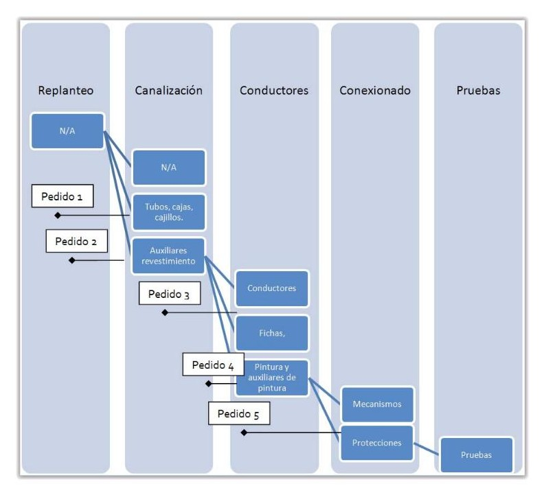
Nótese que el esquema anterior se encuentra en escala temporal de izquierda a derecha para los hitos marcados como rombos. Por tanto forman parte de una planificación.
El diseño del MRP está íntimamente ligado al proceso de asignación de recursos, solo que debido al tiempo de pedido y la coordinación entre pedidos y stock se hace necesaria la anticipación de hitos de pedidos respecto a los hitos de la tarea a la que se asignarán estos recursos.
3.5. Asignación de recursos
La asignación de recursos es el procedimiento por el cual asociamos recursos concretos a tareas concretas. Cada tarea tendrá unas necesidades de recursos para consecución, de forma que a esta asociación la conocemos por asignación de recursos.
Definición
Recurso: es toda fuente o suministro que produce un beneficio para el proceso de producción.
Habitualmente tenemos en cuenta sólo aquellos recursos que producen un gasto a nuestra organización como son:
Mano de obra
Materiales
Medios auxiliares
Combustibles, Energía, Agua, etc.
Toda fuente necesaria para la consecución de una obra es un recurso, desde el propio aire que respira un empleado. Sin embargo de cara a la asignación de recursos sólo tendremos en cuenta aquellos que producen un coste durante la ejecución de las tareas que hemos planificado. Incluso algunos gastos como energía no se asignarán de forma habitual mientras el gasto no sea proporcionalmente significante dentro de la tarea.
De hecho lo normal es que durante la asignación de recursos tengamos en cuenta tan sólo aquellos recursos que quedando ocupados para una tarea ya no estarán disponibles para otra.
Cuando asignamos recursos a las tareas, se considera que realizamos una programación a partir de una planificación. La programación es una extensión de una planificación por la cual añadimos información de quién, qué, cuantos, recursos son necesarios para realizar la tarea y de este modo podemos encajar una programación que servirá de base a la organización de los recursos necesarios en cada momento y a su vez un cálculo de cargas de trabajo de cada recurso.
Atendiendo al tipo de recurso a asignar podemos tener los siguientes casos:
Recursos tipo trabajo: Son recurso para los cuales su coste está asociado a la unidad de tiempo. La mano de obra y la maquinaria suele responder a este tipo de recurso. En ocasiones otros recursos como la energía también pueden asociarse por unidad de tiempo.
Recursos tipo material: estos no están asociados a la unidad de tiempo, sino a la ejecución de la tarea.
Nótese que por ejemplo una determinada tarea podrá durar la mitad de tiempo si se dispone del doble de recursos de tipo trabajo, mientras que en teoría los recursos tipo material serán los mismos en una caos que en otro.
Partiendo de la planificación de las tareas, la planificación realizada con anterioridad, la asignación de recurso requerirá el cálculo de los recursos necesarios para la consecución de cada una de las tareas. Por ejemplo la tarea replanteo requerirá la presencia de algún empleado de la organización que esté presente y señalice sobre la obra la obra los puntos de referencia necesarios para el posterior reconocimiento todos los demás trabajos a realizar. Requerirá algunos recursos materiales como señalizadores, pintura, etc. Por tanto se considerarán estos dos recursos, el primero tipo trabajo y el segundo tipo material.
Asignación de recursos a tarea replanteo:
Replanteo
Mano de obra electricista
Material de señalización
Y de igual manera procederemos para el resto de tareas. Al igual que durante la programación, las mediciones nos darán aquí una guía a seguir a través de los descompuestos de las partidas. Los descompuestos incluirán los elementos de distinta naturaleza que de forma directa requiere una intervención, normalmente distinguidos entre las siguientes naturalezas:
Capítulo: Parte significativa dentro de las mediciones de obra.
Partida: Composición de unidades de obras completas medidas en dimensiones certificables.
Descompuesto Mano de obra: Horas de personal, cuadrillas, especialistas, ayudantes, etc.
Descompuesto Material: Cualquier material directo asociable a la partida.
Descompuesto Maquinaria: Maquinaria de obra, maquinaria especial, herramientas especiales, etc.
Otro: Grupo compuesto por medios auxiliares, mano de obra auxiliar o cualquier no clasificable entre los anteriores.
A continuación se muestra un ejemplo de la partida CUADRO PROTEC.ELEC- TRIFIC. BÁSICA, de definición:
“Cuadro protección electrificación básica, formado por caja, de doble aislamiento de empotrar, con caja de empotrar de puerta blanca Legrand Ekinoxe o similar de 1x12 elementos, perfil omega, embarrado de protección, interruptor de control de potencia, interruptor general magnetotérmico de corte omnipolar 40 A, interruptor diferencial 2x40 A 30 mA y PIAS (I+N) de 10, 16, 20 y 25 A. Instalado, incluyendo cableado y conexionado.”
Ejemplo de descompuesto de partida
| Naturaleza | Ud | Descripción |
|---|---|---|
| Mano de obra | h | Oficial 1a electricista |
| Material | ud | Pequeño material |
| Material | ud | Caja empot.pta.blanca 1X12 |
| Material | ud | Int.aut.diferencial 2x40 A 30 mA |
| Material | ud | PIA (I+N) 10 A |
| Material | ud | PIA (I+N) 16 A |
| Material | ud | PIA (I+N) 20 A |
| Material | ud | PIA (I+N) 25 A |
| Material | ud | PIA 2x40 A |
| Otros | % | Costes Indirectos |
Elementos de instalación (recursos materiales)
De estos descompuestos podemos extraer la necesidad de asignar Mano de obra de Oficial 1a electricista y una serie de recursos materiales a la tarea correspondiente a la colocación de Caja General de Mando y Protección. Hay que advertir que de nuevo los descompuestos de una partida no reflejan completamente el caso real de una planificación.
Concretamente esta partida nos muestra el conjunto de elementos necesarios para la realización de la partida. Pero al contrastar la lista de recursos necesarios con nuestra planificación observamos que hay elementos de esta lista que se requieren antes que otro.
En particular el Material Ud. Caja empot.pta.blanca.1x12, que en sí la caja que contendrá posteriormente las protecciones se requerirá en nuestra tarea colocación de “canalización”, mientras que el resto de elementos no serán necesarias hasta una fase posterior “conexionado”. Por este motivo deben realizarse las asignaciones materiales y de mano de obra conforme a la estructura de montaje definida por nosotros y no propiamente la existente en mediciones.
Asignación de recursos a planificación
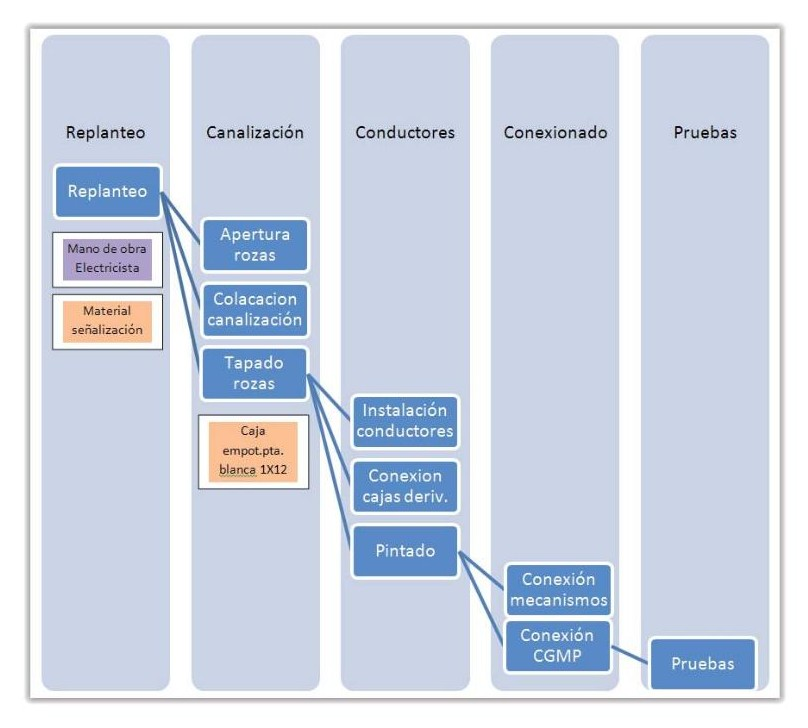
Y la asignación continuaría hasta completar la asignación de todos los recursos de tipo material y de tipo trabajo a la planificación.
Los recursos auxiliares podrán o no asignarse a las tareas. Determinados coste pueden ser difíciles de asignar a las tareas, y de hacerlo, resultarían demasiado engorrosos. El nivel de detalle de asignación de los recursos debe ser tal que nos permita un volumen manejable y adecuado. Por eso determinados gastos es mejor no imputarlos directamente dentro de las tareas sino repartirlos a lo largo de toda la intervención como suma de todos ellos e imputación mediante porcentajes.
Normalmente esos costes indirectos no se asignan, sino que se consideran fuera de los costes operativos. Los gastos calculados directamente a través de asignación a tareas los conocemos como costes operativos o costes de operación.
La asignación de recursos a las tareas tiene por objetivo:
Llevar a cabo un seguimiento de las productividades de los recursos asignados a las tareas
Asegurar una buena comprensión y descripción del proyecto
Ayudar al cálculo de necesidades y plazos de cada tarea
Realizar un correcto seguimiento y control de los costes de los recursos
Observar recursos con sobreasignación o infraasignación
Sobreasignación: se produce una sobreasignación cuando un determinado recurso en una fase de obra se encuentra asignado por encima de su capacidad. El caso contrario es la infraasignación. Un recurso sobreasignado no podrá cumplir sus tareas en un tiempo normal de ejecución, por lo que para resolverlo se requeriría duplicar el recurso o proponer medidas extraordinarias como horas extra. El proceso de asignación permitirá igualmente detectar recursos que se van a necesitar por debajo de su capacidad real, y por tanto son susceptibles de ser asignados a otras tareas durante el transcurso de la fase.
En general la fase de asignación debe permitir encajar los recursos disponibles con la planificación propuesta en un proceso iterativo de encaje de tareas a cada recurso:
Mejora del planning de obra mediante asignación de recursos
Sobre determinados recursos podrá actuarse de modo parcial. Por ejemplo ayudantes pueden asignarse parcialmente a varias tareas a la vez de modo que pueda lograrse una mayora asignación. Otras formas de actuar sobre las asignaciones serán:
Asignar más unidades a las tareas que se quiera reducir su duración.
Eliminar determinadas asignaciones permitiendo que se amplíe su plazo de ejecución.
Modificar el orden en que uno o varios recursos actúan sobre una tarea.
3.6. Materiales auxiliares
Los materiales auxiliares no se tendrán en cuenta habitualmente dentro de las asignaciones de recursos. Dado que su importancia relativa es menor, se suelen tratar de forma conjunta para todo el conjunto de la obra, permitiendo que estén disponibles según necesidades en almacén. Ya hemos visto que materiales como cajas de derivación, fichas de empalmes, etc. no suelen encontrarse medidas dentro de las mediciones de obras, sino expresadas como p.p. (parte proporcional de...) o calculadas como costes indirectos en forma porcentual.
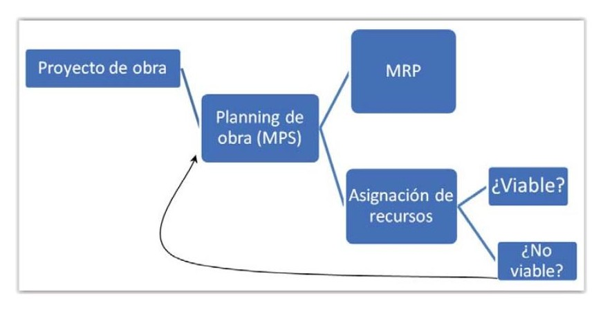
Sin embargo su ausencia o escasez puede resultar igualmente catastrófica para los intereses de la organización, pues la falta de algún recurso de este tipo puede producir que se incurran en los gastos de recursos asignados para las partidas, pero no se puedan concluir los mismos en los tiempos esperados, quedando trabajos pendientes de “rematar” que pueden multiplicar los costes de una obra de una forma extraordinaria. Por tanto anquen sean de tratamiento indirecto no debe olvidarse una planificación sobre ellos que permita evitar este tipo de situaciones.
Cuarto eléctrico
Los tipos de materiales auxiliares más importantes en el ámbito eléctrico los podemos dividir según sean:
Canalizaciones eléctricas: en gran medida el tipo de canalización empleado condicionará una serie de recursos auxiliares u otros. Las canalizaciones empotradas implicarán la necesidad de algún pegamento de sujeción, las bandejas requerirán cables de acero y apoyos, las canaletas tornillería, etc.
Cajas: Algunas cajas importantes se encontrarán dentro de las lista de materiales, pero otras muchas no lo suelen estar, sobre todos cajas de derivación, y similares. Del mismo modo que el caso anterior, pueden requerir auxiliares como pegamentos en las empotradas, tornillería caso de superficie, etc.
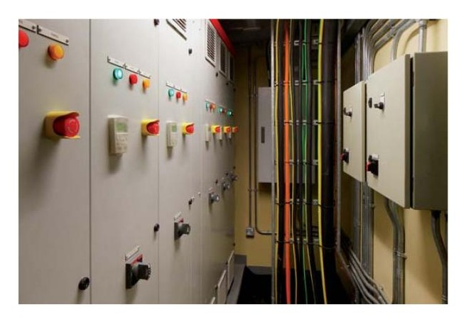
Será necesario realizar una estimación razonable del número de cajas a emplear en la obra, a través del número de circuitos y número de habitaciones en que serán necesarias estas cajas. Si ya se ha realizado el replanteo, esta labor será mucho más precisa, pues habrá quedado acordado el número de ellas y sus posiciones.
Más difícil resulta la estimación antes del replanteo, pues los supuestos de las posiciones de las cajas de derivación por ejemplo pueden quedar modificadas por necesidades o solitudes del técnico encargado de la dirección de obra, por lo que habitualmente si se miden antes del replanteo se emplearán mediciones por exceso basadas en ratios habituales de obras anteriores y el tanteo realizado sobre plano o durante las mediciones de contrata. Igualmente otros aspectos como posibles interferencias con otras instalaciones: agua, gas, etc. acostumbran a modificar en menor o mayor medida las mediciones inicialmente estimadas.
Durante esta operación, se tendrá en cuenta por ejemplo que habitualmente se prefiere la colocación de cajas de derivación en aquellas paredes que no se encuentran alicatadas o aplacadas. Cuando es posible, si una pared se encuentra con este tipo de revestimiento en una cara y en la opuesta no suele preferirse la orientación en las paredes revestidas de yeso o similar, pues evitan el corte de azulejos o aplacados.
Soportes: Según los tipos de canalizaciones pueden requerirse la instalación de soportes sobre los que descansen las canalizaciones. Su aproximación suele realizarse en función de los metros lineales de las líneas, sin embargo la experiencia también demuestra que las instalaciones más sinuosas con mayores cambios de trazado consumen en mayor número este tipo de recursos que aquellas en que los trayectos resultan más rectilíneos. Del mismo modo no se consumen igual en trayectos horizontales, verticales o inclinados. Por esto deben aplicarse algún coeficiente de correlación para el cálculo de sus necesidades en función de la instalación. Algunos fabricantes incorporan programas para el cálculo aproximado de estas necesidades.
Material de empalme: Fichas de empalme, terminales, elementos de conexión, etc. En general mantendrán una proporcionalidad con el número de cajas de derivación y éstas a su vez con el número de receptores y el número de habitaciones. Su base de cálculo implicará aproximar el número de cajas de derivación y el número de circuitos que cada caja alcanza. No obstante como todo material auxiliar resulta complejo de medir con precisión y dado que siempre habrá desperdicio de los mismos debe excederse el cálculo para evitar su escasez.
La existencia de muy diversos calibre complica en ocasiones los cálculos si pretendemos realizarlos de forma determinista.
Elementos auxiliares, regleta de conexiones
Material de señalización: tanto para la señalización de trazados como para la señalización del cableado y cuadros, etc. La obligación de señalizar se encuentra recogida en el REBT en sus ITCs., así como el código de colores a emplear en la instalación. Será necesario además señalizar todos los elementos de protección con el circuito al que pertenecen o equipos a los que protegen para una mejor comprensión por parte de los usuarios de estas instalaciones.
Luminarias: En función de los tipos de obras, se pueden encontrar luminarias y lámparas como materiales directos o no. Por ejemplo en el caso de viviendas no suelen incorporarse ningún elemento extra a los puntos de luz en las propias viviendas, pero sí exigen luminarias y lámparas acabadas e instaladas en zonas comunes, y en algunos casos en baños o cocinas.
Es muy conveniente acordar con la dirección de obras el tipo de acabado final de los puntos de luz lo antes posible, pues el pedido de estos materiales realizado con plazo suficiente acostumbra a mejorar el precio de forma significativa.
Además en la normativa en cuestión de iluminación doméstica ha variado mucho en los últimos años. La incorporación del LED como iluminación dominante frente a la incandescente ya desaparecida y al coste intermedio entre ambas de la iluminación de bajo consumo, ha modificado notablemente el coste relativo de la luminaria en sí respecto a la situación previa, por lo que el acabado con o sin luminaria de un punto de luz puede modificar notablemente las mediciones de electricidad.
Debe tenerse en cuenta que atendiendo a la descripción de un punto de luz sencillo en mediciones, las luminarias no estarían incluidas en la partida punto de luz:
“Punto de luz sencillo realizado con tubo PVC corrugado de M 20/gp5 y conductor rígido de 1,5 mm2 de Cu., y aislamiento VV 750 V., incluyendo caja de registro, caja de mecanismo universal con tornillos, interruptor unipolar , instalado.”
Pero al indicar “instalado” en las mismas, muchos Directores de obras exigen al menos la presencia de casquillo portalámparas o similar en el punto de luz, material que habría de ser tenido en cuenta, junto con la necesidad o no de luminaria en sí.
Recuerda
Muchos materiales auxiliares al no estar definidos completamente en mediciones deben ser acordados con los directores de obras. Esta labor además de ser muy importante para el conjunto de la obra en su gestión de pedidos también tiene gran influencia en aspectos económicos por lo que conviene que sean acordados lo antes posible.
Aspectos a tener en cuenta en el cálculo de necesidades de materiales auxiliares
Por su importancia relativa para el cálculo del material auxiliar y en las mediciones a realizar de los mismos, debemos tener en cuenta algunos aspectos de la instalación. Para ello debemos tener en cuenta para el caso de estudio:
Tipos de conductores y designación de aislamiento.
Tipos de canalizaciones a emplear.
Elementos auxiliares de conexión para esos tipos de aislamientos + canalizaciones
Aunque los conductores, las canalizaciones y algunos de los elementos de conexión se encuentren entre los materiales directos que se miden en mediciones, el tipo de ellos determinará junto con las características del edificio las verdaderas necesidades de materiales auxiliares para la obra, de ahí la importancia de estas preguntas. Igualmente es posible que un mismo edificio contemple diferentes formas de canalización, conductores y por tanto elementos auxiliares.
Para el comienzo de los cálculos de materiales auxiliares debemos por tanto tener en cuenta por separado aquellas zonas del edificio u obra que tengan características más o menos homogéneas entre ellas, por ejemplo:
Zonas de vivienda
Zonas comunes
Oficinas
Locales
Tramos de instalación interior, tramos de instalación de enlace, etc.
Debemos clasificar por separado aquellas instalaciones que tengan diferentes tipos de canalización, según la clasificación del REBT (ITC-21) serían:
Instalaciones fijas en superficies.
Instalaciones empotradas.
Instalaciones aéreas o con tubos al aire.
Instalaciones enterradas.
En una siguiente clasificación, tendremos en cuenta la clasificación del aislamiento según los índices IP para el tramo previamente clasificado de la instalación. Esto es necesario dado que los elementos auxiliares de conexión deberán cumplir diferentes exigencias según las zonas que atraviesan, por lo
que debemos desagregar previamente los materiales auxiliares a emplear en cada una de estas zonas clasificadas por separado.
El siguiente paso a tener en cuenta para la utilización del material auxiliar será la tensión asignada para los conductores de esas zonas. Habitualmente nos encontraremos en edificios en BT tensiones asignadas a los aislantes de 450/750 VV o 0,6/1Kv, de modo que debe chequearse el cumplimiento del material auxiliar según estos valores de tensión asignada. Puede darse el caso de que económicamente la mejora sea significativa entre emplear materiales auxiliares de diferente tensión asignada entre zonas o por el contrario que empleemos para todas el más restrictivo de ellos, siempre y cuando la desventaja económica de su utilización no resulte demasiado importante respecto de la simplificación que nos produce a la hora del pedido de materiales auxiliares.
Cuadro y señalización
Características de las canalizaciones aspectos técnicos a cumplir
Las canalizaciones utilizadas habitualmente en las instalaciones de baja tensión se agrupan en dos bloques principales los tubos protectores y las canales protectoras. También se hará mención de las bandejas metálicas muy empleadas en edificios que no son de viviendas, como edificios de pública concurrencia, garajes, etc.
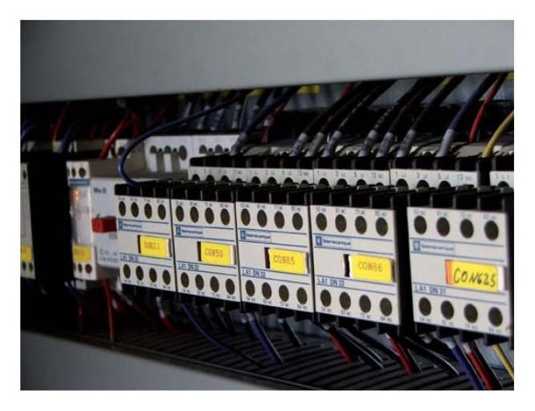
Tubos:
Los tubos protectores constituyen el tipo de canalización más utilizada en las instalaciones eléctricas de interior. La superficie interior de los tubos y las uniones con otros accesorios no deben presentar en ningún punto aristas, asperezas, rugosidades, fisuras, etc. que puedan dañar el aislamiento de los conductores o causar lesiones al personal que realiza la instalación. El tipo de tubo determinará el tipo de material auxiliar necesario para el montaje de la canalización.
Atendiendo a las características constructivas y a los materiales empleados en su fabricación, los tubos se clasifican:
Según los materiales de que están fabricados, se puede diferenciar entre:
Metálicos
No metálicos
Mixtos
Por sus características, se clasifican en:
Rígidos
Metálicos
No metálicos
Flexibles
Metálicos con cubierta aislante
No metálicos o corrugados
No metálicos reforzados
Tubos rígidos metálicos
Son aquellos que requieren técnicas y herramientas especiales para su curvado. Se construyen de acero y aleaciones de aluminio, empleándose fundamentalmente en instalaciones de superficie donde se requiera una importante protección mecánica de los conductores.
Algunos accesorios para facilitar la instalación serán tales como curvas, manguitos de empalme y derivaciones. Este tipo de material auxiliar suele consumir bastante tiempo de cálculo por parte del técnico instalador, pues las mediciones del proyecto no reflejarán el número de ellos que son necesarios. Es habitual realizar un tanteo de las necesidades previo al pedido y tratar de garantizar la posibilidad de devolución de picos de material sobrantes, pues ajustar de modo concreto la medición del número de estos elementos resulta bastante compleja para instalador.
Tubos protectores metálicos rígidos
Tubos rígidos de plástico
Se fabrican en PVC y se utilizan básicamente en instalaciones de superficie. Al igual que los tubos metálicos su curvado se realiza con técnicas y herramientas especiales.
Las características mínimas, tanto eléctricas como mecánicas, que deben cumplir los tubos rígidos se indican en la norma UNE-EN 50086-2-1.
Tubos flexibles metálicos
Se construyen con chapa metálica recubiertos con una envolvente de material plástico (PVC).
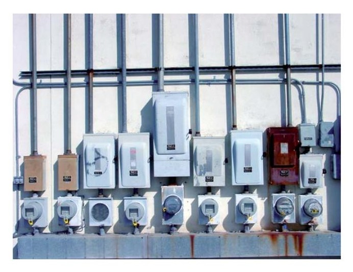
La cubierta puede ser lisa o corrugada y están diseñados para soportar sin deterioros un número elevado de flexiones. Esta cualidad los hace idóneos para instalaciones de superficie móviles como por ejemplo para alimentar los cabezales de muchas máquinas herramientas o receptores semifijos.
Estos tubos poseen un grado de protección elevado como pueda ser IP67 y pueden trabajar sin dificultad según la norma UNE-EN 50086-2-3.
Tubos flexibles no metálicos
Dado que son tubos flexibles su curvado se realiza perfectamente con las manos sin necesidad de ninguna herramienta. Se construyen con materiales plásticos PVC y dada su forma exterior estriada reciben el nombre de corrugados.
Son muy utilizados en las canalizaciones empotradas en tabiques, paredes maestras y muros pues sus estrías facilitan una mayor fijación a la obra que los tubos lisos.
Tubos flexibles reforzados
Son tubos fabricados con dos capas de material aislante PVC que le proporciona una mayor resistencia a los golpes.
Su aspecto es parecido al tubo corrugado y se emplea en instalaciones enterradas.
El diámetro del tubo constituirá el valor necesario para en su caso los roscados y gomas protectoras necesarias en la instalación, debiendo estar entre los normalizados habituales de la siguiente tabla:
Diámetros normalizados de los tubos protectores (en mm)
12 32 50 90 140 200
16 35 63 110 160 225
20 40 75 125 180 250
Para todos aquellos tubos que se empleen en superficie habrán de preverse el número de soportes de fijación en función de la longitud y zona de instalación, mientras en los empotrados se habrá de prever la necesidad de pastas de agarre también en función de sus metros y zona de instalación. Los tubos enterrados en general no necesitarán estos materiales auxiliares de fijación ya que suelen emplear de relleno el propio material excavado, si bien en ocasiones requerirán cintas de señalización o refuerzos.
Tubos para utilizar según el tipo de instalación
Para cada tipo de instalación deberán utilizarse determinados tipos de tubos. En todos los casos, los tubos deberán tener un diámetro tal que permitan un fácil alojamiento y extracción de los cables o conductores.
Para cada tipo de instalación se va a indicar en una tabla, cuáles son los diámetros exteriores mínimos de los tubos, en función del número y la sección de los cables que vayan a conducir, REBT.
Tubos para instalaciones fijas en superficie
En las canalizaciones superficiales, los tubos deberán ser preferentemente rígidos y en casos especiales podrán usarse tubos curvables. Los diámetros exteriores mínimos de los tubos en función del número y la sección de los conductores que van a conducir aparecen en el esquema a continuación.
Diámetros mínimos de los tubos para instalaciones fijas en superficie
| Sección (en mm2) | Diámetro exterior de los tubos (en mm) | |||||
|---|---|---|---|---|---|---|
| para conductores | Número de conductores | |||||
| unipolares | 1 | 2 | 3 | 4 | 5 | |
| 1,5 | 12 | 12 | 16 | 16 | 16 | |
| 2,5 | 12 | 12 | 16 | 16 | 20 | |
| 4 | 12 | 16 | 20 | 20 | 20 | |
| 6 | 12 | 16 | 20 | 20 | 25 | |
| 10 | 16 | 20 | 25 | 32 | 32 | |
| 16 | 16 | 25 | 32 | 32 | 32 | |
| 25 | 20 | 32 | 32 | 40 | 40 | |
| 35 | 25 | 32 | 40 | 40 | 50 | |
| 50 | 25 | 40 | 50 | 50 | 50 | |
| 70 | 32 | 40 | 50 | 63 | 63 | |
| 95 | 32 | 50 | 63 | 63 | 75 | |
| 120 | 40 | 50 | 63 | 75 | 75 | |
| 150 | 40 | 63 | 75 | 75 | - | |
| 185 | 50 | 63 | 75 | - | - | |
| 240 | 50 | 75 | - | - | - |
Para más de 5 conductores o para conductores aislados de secciones diferentes para instalar
en un mismo tubo, su sección interior será, como mínimo igual a 2,5 veces la sección de los
conductores.
Tubos para instalaciones empotradas
En las canalizaciones empotradas en obra (paredes, techos y falsos techos), los tubos protectores podrán ser rígidos, curvables o flexibles y sus características mínimas se describen en las normas UNE-EN 50.086-2-1, UNE-EN 50086-2-2 y UNE-EN 50086-2-3 respectivamente. Los diámetros mínimos de los tubos aparecen en el esquema siguiente:
Diámetros de tubos mínimos en montajes empotrados
Diámetros mínimos de los tubos para instalaciones empotradas
Sección (en
mm2) Diámetro exterior de los tubos (en mm)
para conductores Número de conductores
| unipolares | 1 | 2 | 3 | 4 | 5 |
|---|---|---|---|---|---|
| 1,5 | 12 | 12 | 16 | 16 | 20 |
| 2,5 | 12 | 16 | 20 | 20 | 20 |
| 4 | 12 | 16 | 20 | 20 | 25 |
| 6 | 12 | 16 | 25 | 25 | 25 |
| 10 | 16 | 25 | 25 | 32 | 32 |
| 16 | 20 | 25 | 32 | 32 | 40 |
| 25 | 25 | 32 | 40 | 40 | 50 |
| 35 | 25 | 40 | 40 | 50 | 50 |
| 50 | 32 | 40 | 50 | 50 | 63 |
| 70 | 32 | 50 | 63 | 63 | 63 |
| 95 | 40 | 50 | 63 | 75 | 75 |
| 120 | 40 | 63 | 75 | 75 | - |
| 150 | 50 | 63 | 75 | - | - |
| 185 | 50 | 75 | - | - | - |
| 240 | 63 | 75 | - | - |
Para más de 5 conductores por tubo o para conductores de secciones
diferentes para instalar en el mismo tubo, su sección interior será como
mínimo igual a 3 veces la sección ocupada por los conductores.
Tubos para instalaciones aéreas
En las canalizaciones al aire, destinadas a la alimentación de máquinas o elementos de movilidad restringida, los tubos serán flexibles y sus características mínimas se describen en la norma UNE-EN 50086-2-3.
Diámetros mínimos de los tubos para instalaciones aéreas
Sección (en
mm2) Diámetro exterior de los tubos (en mm)
para conductores Número de conductores
| unipolares | 1 | 2 | 3 | 4 | 5 |
|---|---|---|---|---|---|
| 1,5 | 12 | 12 | 16 | 16 | 20 |
| 2,5 | 12 | 16 | 20 | 20 | 20 |
| 4 | 12 | 16 | 20 | 20 | 25 |
| 6 | 12 | 16 | 25 | 25 | 25 |
| 10 | 16 | 25 | 25 | 32 | 32 |
| 16 | 20 | 25 | 32 | 32 | 40 |
Para más de 5 conductores por tubo o para conductores o cables de secciones diferentes para instalar en el mismo tubo, su sección interior será como mínimo, igual a 4 veces la sección ocupada por los
conductores.
Tubos para instalaciones enterradas
En las canalizaciones enterradas, los tubos protectores serán conformes a lo establecido en la norma UNE-EN 50086-2-4.
Los diámetros mínimos de los tubos para este tipo de instalaciones aparecen en el siguiente esquema.
Diámetros de tubo en canalizaciones enterradas
Diámetros mínimos de los tubos para instalaciones enterradas
| Sección (en mm2) | Diámetro exterior de los tubos (en mm) | ||||
|---|---|---|---|---|---|
| para conductores | Número de conductores | ||||
| unipolares | < 6 | 7 | 8 | 9 | 10 |
| 1,5 | 25 | 32 | 32 | 32 | 32 |
| 2,5 | 32 | 32 | 40 | 40 | 40 |
| 4 | 40 | 40 | 40 | 40 | 50 |
| 6 | 50 | 50 | 50 | 63 | 63 |
| 10 | 63 | 63 | 63 | 75 | 75 |
| 16 | 63 | 75 | 75 | 75 | 90 |
| 25 | 90 | 90 | 90 | 110 | 110 |
| 35 | 90 | 110 | 110 | 110 | 125 |
| 50 | 110 | 110 | 125 | 125 | 140 |
| 70 | 125 | 125 | 140 | 160 | 160 |
| 95 | 140 | 140 | 160 | 160 | 180 |
| 120 | 160 | 160 | 180 | 180 | 200 |
| 150 | 180 | 180 | 200 | 200 | 225 |
| 185 | 180 | 200 | 225 | 225 | 250 |
| 240 | 225 | 225 | 250 | 250 | - |
Para más de 10 conductores o para conductores de secciones diferentes para instalar en un mismo tubo, su sección interior será como mínimo igual a 4 veces la sección ocupada por los conductores.
Instalación y colocación de los tubos
El montaje y la instalación de canalizaciones con tubos protectores se ajustarán a lo dispuesto con carácter general en el REBT en su ITC-BT-19, ITC- BT-20 y en la norma UNE 20460-5-523. Existen una serie de prescripciones generales que se complementan con otras específicas según la instalación sea en superficie, empotrada o al aire.
Prescripciones generales
Existen una serie de prescripciones generales que deben cumplirse a la hora de proceder al montaje o instalación de canalizaciones con tubos protectores. Las más importantes son las siguientes:
El trazado de las canalizaciones se hará siguiendo líneas verticales y horizontales o paralelas a las aristas de las paredes que limitan el local donde se efectúa la instalación.
Las curvas practicadas en los tubos serán continuas y no originarán reducciones de sección. Los radios mínimos de curvatura para cada clase de tubo serán los especificados por el fabricante.
Los registros son cajas empotradas o de superficie para facilitar el paso de cables en zonas difíciles y para evitar tramos de tuberías excesivamente largos.
Se podrán introducir y retirar con facilidad los conductores en los tubos una vez colocados y fijados, disponiendo para ello los registros que se estimen necesarios, que en tramos rectos no estarán separados entre sí más de 15 metros.
Las conexiones entre conductores se realizarán en el interior de cajas apropiadas de material aislante.
En ningún caso se permitirá la unión de conductores como empalmes o derivaciones por simple retorcimiento o arrollamiento entre sí de los conductores, sino que deberá realizarse siempre utilizando bornes de conexión.
Los tubos metálicos que sean accesibles deben ponerse a tierra, debiendo asegurarse su continuidad eléctrica.
No podrán utilizarse los tubos metálicos como conductores de protección o de neutro.
Montaje fijo en superficie
Cuando se realice un montaje superficial con tubos se tendrán en cuenta, además de las consideraciones generales, las siguientes:
Los tubos se fijarán a las paredes o techos por medio de bridas o abrazaderas protegidas contra la corrosión y sólidamente sujetas. La separación entre fijaciones será, como máximo de 0,5 metros. Se dispondrán fijaciones antes y
después de un cambio de dirección, en los empalmes y en la proximidad de las entradas a cajas o aparatos.
Los tubos se colocarán adaptándose a la superficie sobre la que se instalan, siendo conveniente colocarlos, siempre que sea posible, a una altura mínima de 2,5 metros sobre el suelo.
En los cruces de tubos con juntas de dilatación de un edificio, deberán interrumpirse los tubos, quedando los extremos del mismo separados entre sí 5 centímetros y empalmándose posteriormente mediante manguitos deslizantes que tengan una longitud mínima de 20 centímetros.
Montaje fijo empotrado
Cuando se empotran los tubos en una instalación, se tendrán en cuenta, además de las consideraciones generales, las siguientes prescripciones:
En la instalación de los tubos en el interior de los elementos de la construcción, las rozas no pondrán en peligro la seguridad de las paredes o techos en que se practiquen. Las dimensiones de las rozas serán suficientes para que los tubos queden recubiertos por una capa de 1 centímetro de espesor, como mínimo. En los ángulos, el espesor de esta capa puede reducirse a 0,5 centímetros.
No se instalarán, entre forjado y revestimiento, tubos destinados a la instalación eléctrica de las plantas inferiores.
Para la instalación de la propia planta, únicamente podrán instalarse, entre forjado y revestimiento, tubos que deberán quedar recubiertos por una capa de hormigón o mortero de 1 centímetro de espesor, como mínimo.
En el caso de utilizarse tubos empotrados, es conveniente disponer los recorridos horizontales a 50 centímetros como máximo, de suelo o techos y los verticales a una distancia no superior a 20 centímetros de las esquinas.
Montaje al aire
Sólo se permite su uso para alimentar máquinas o elementos de movilidad restringida desde canalizaciones prefabricadas y cajas de derivación fijadas al techo, la longitud total de la conducción en el aire no será superior a 4 metros y no empezará a una altura inferior a los 2 metros.
Canales protectoras
Se utilizan para instalaciones de superficie ancladas sobre paredes, techos, columnas, suelos, calzadas, etc. y para el cableado de cuadros eléctricos.
Tipos y características de canales protectoras
El mercado actual ofrece gran variedad de canales o canaletas homologadas por la norma UNE-EN 50085, fabricadas con PVC, o materiales ligeros, por ejemplo aleaciones de aluminio.
Las dimensiones normalizadas se indican en el esquema siguiente.
Dimensiones normalizadas de canaletas
(en mm)
| 7 x 12 | 16 x 40 | 40 x 90 |
|---|---|---|
| 10 x 16 | 20 x 50 | 40 x 110 |
| 10 x 22 | 20 x 60 | 40 x 150 |
| 10 x 35 | 25 x 40 | 60 x 110 |
| 16 x 16 | 40 x 40 | 60 x 150 |
| 16 x 25 | 40 x 60 | 60 x 200 |
Atendiendo al grado de protección que ofrecen a las instalaciones, la norma citada agrupa a las canales en dos bloques:
Canales con tapa de acceso que puede abrirse sin herramientas, con grado de protección inferior a IP4X. En estas canaletas sólo podrán utilizarse conductores aislados bajo cubierta estanca, de tensión asignada mínima 300/500 V.
Canales con tapas de acceso que sólo pueden abrirse con la ayuda de herramientas, con grado de protección IP4X o superior. En estas canales pueden utilizarse conductores aislados de tensión asignada 450/750 V.
La normativa actual autoriza a instalar sobre la canaleta:
Interruptores, tomas de corriente y dispositivos de mando y control siguiendo las instrucciones del fabricante.
Realizar empalmes de conductores en su interior y la conexión de aparatos.
El REBT ITC-21 y la norma UNE-EN 50085 indican que las canalizaciones para instalaciones de superficie deberán tener unas características eléctricas y mecánicas mínimas referentes a resistencia a los golpes, a la penetración de agua, de cuerpos sólidos, propagación del fuego y adecuadas a las temperaturas máxima y mínima del lugar de emplazamiento de la instalación.
El número máximo de conductores que pueden alojarse en el interior de una canal será el que permita un tendido fácil y la incorporación de accesorios a la misma.
Bandejas metálicas
Cuando una instalación de superficie necesita una protección mecánica importante, contra golpes a los cables, se utilizan bandejas metálicas en lugar de las canaletas. También son bastante comunes para ser utilizadas en el interior de falsos techos donde además no requerirán una protección tan importante, quedando más a la vista para el mantenimiento y manipulación una vez abierto el falso techo. Por este motivo y por la gran cantidad de conductores con buena refrigeración que pueden albergar son muy comunes en edificios que no son de viviendas.
Además de la protección, la función de las bandejas es el soporte de los conductores instalados siguiendo las indicaciones de la ITC-BT-20 y las instrucciones de la norma UNE-EN 61537. En las instalaciones realizadas por el procedimiento de bandejas metálicas sólo puede emplearse cable de tensión asignada de 0,6/1 kV, cosa común en edificios singulares.
Las bandejas metálicas deben conectarse a la red de tierras de tal forma que quede asegurada su continuidad eléctrica. No obstante, la bandeja no puede utilizarse como conductor de protección o de neutro ya que el vigente Reglamento Electrotécnico para Baja Tensión prohíbe incluir en serie las masas metálicas ITC-BT-18. En consecuencia, no puede usarse la bandeja metálica como conductor de protección.
Existen otros modelos de bandejas portacables denominadas aislantes realizadas en otros materiales que evitarán estas necesidades.
Montaje de un cuadro en superficie
Regletas de conexiones
Son los dispositivos auxiliares utilizados para realizar la unión de varios conductores de un circuito eléctrico en el interior de las cajas de derivación o cajas de conexiones./empalmes.
El tipo más común de estos elementos auxiliares constan de un pequeño tubo metálico con dos agujeros roscados y tornillos en sus extremos, para fijar los cables una vez situados en su interior. Las partes metálicas están protegidas con material aislante de forma rectangular, engarzadas unas con otras formando tiras fácilmente divisibles.
El tamaño de la regleta que se vaya a utilizar en una instalación depende de la sección de los cables que se conecten, se fabrican para secciones de 4, 6, 10, 16 y 25 mm2.
También existen modelos similares unidireccionales, en los que todos los cables entran por un solo lado y constando la parte metálica de un solo tornillo destinado a aprisionar mecánicamente los cables trenzados previamente a mano. Es común que este tipo de empalme esté realizado en plástico trans-
parente lo que permitirá una mejor observación para el mantenimiento y localización de averías.
Igualmente existen diversos calibres en función de las secciones de conductores y número de hilos a unir en cada caso. Por tanto su estimación exhaustiva resulta compleja, por lo que en general deberán preverse ciertos excesos en su cálculo. Esto no suele suponer gran inconveniente teniendo en cuenta que son elementos muy comunes en la práctica totalidad de las instalaciones eléctricas.
A diferencia de los anteriores (regletas) y de otros modelos estos elementos unidireccionales están previstos únicamente para su uso en el interior de cajas, y no poseen opción de sujeción a paneles por ejemplo, cosa que sí permiten las regletas y otros modelos previstos para sujeción a una superficie.
Otros elementos auxiliares para el conexionado
Estos elementos están diseñados para proteger los elementos conductores depositados en su interior y a las personas de contactos directos con las partes con tensión.
Los principales elementos auxiliares son: las cajas de conexiones, las cajas de mecanismos, de protección y las regletas de conexión. Su tipo está muy condicionado a los elementos de canalización que se han empleado en la instalación.
Cajas de conexiones
Se fabrican de varias medidas según el número de conexiones que debe acoger y pueden ser de forma generalmente cuadrada o rectangular. Todas ellas disponen de huellas en sus paredes para romper y permitir el paso de los tubos y cables en su interior.
Según el tipo de instalación las cajas se fabrican para superficie o para empotrar. Las primeras son de mayor resistencia mecánica a los golpes y poseen un grado de estanqueidad superior a las segundas generalmente.
Todas las cajas disponen de su correspondiente tapa de cierre que se fijan mediante rosca, muelles, tornillos, etc. según los tipos. Es común que en zonas accesibles se exija la presencia de un cierre no manipulable sólo con las manos sino que requieran útiles o llaves.
Caja exterior en superficie
Cajas de mecanismos
Las cajas de mecanismos están destinadas a recoger distintos tipos de mando y control como interruptores, conmutadores, pulsadores, tomas, etc. En general su estimación es directa a través del número de mecanismos que dispone la instalación.
Se construyen con materiales plásticos tipo PVC de forma cuadrada o redonda para empotrar y rectangulares estancas para instalación superficial.
Al igual que las cajas de empalmes, en sus paredes laterales disponen de huellas para romper e introducir los extremos de los tubos y los cables. También se equipan con tornillos en los bordes exteriores para la fijación de los mecanismos y guías para enlazar varias cajas entres sí. Algunos mecanismos aún poseen además garras para fijarse a la caja del mecanismo sin necesidad de atornillar directamente a la caja aunque esta opción es mucho menos recomendable.
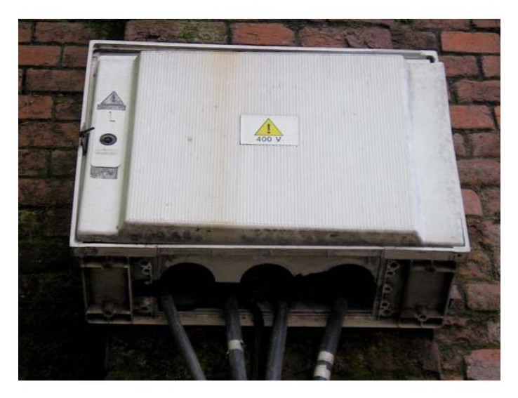
Portalámparas.
Generalmente un portalámparas está formado por:
Un casquillo metálico roscado para la sujeción de las lámparas y su conexión al neutro de la instalación.
Una base de material aislante, resistente al calor y fabricado con materiales, plásticos, cerámicos o similares, para la sujeción del casquillo. En el centro de esta pieza se monta un segundo borne para la conexión de la lámpara con la fase de la red.
Envolvente de protección contra contactos con las partes con tensión.
Existen diferentes tipos de portalámparas fabricados con materiales varios y de diferentes tamaños, o colgables en el propio cable.
Punto de luz con lámpara y bombilla
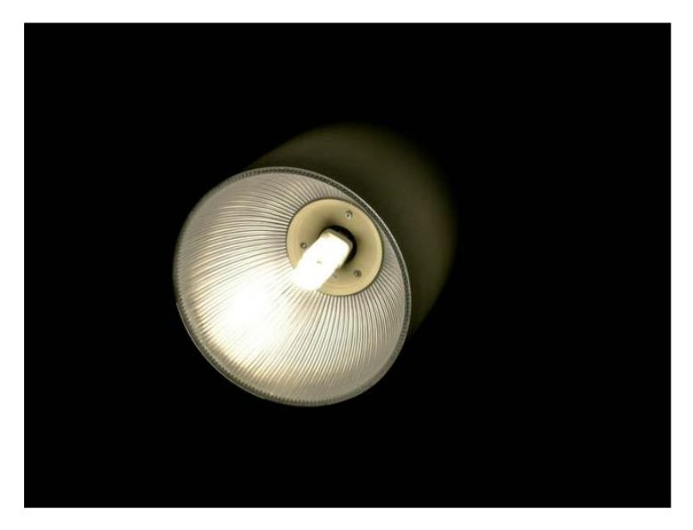
Fusibles
Pueden considerarse elementos también auxiliares ya que en general no vienen incluidos en las cajas que los contienen, pues el fusible requerido no siempre será el mismo en cada base portafusibles. Existen diversos formatos en función de su forma:
Cartuchos cilíndricos
Fusibles tipo D
Fusibles tipo D0
Fusibles tipo de cuchillas o también llamados NH
Fusible NH00 o de cuchillas
El tipo a emplear vendrá determinado por la base empleada y debe tenerse en cuenta la normativa de la compañía distribuidora así como las características reflejadas en el proyecto técnico de la instalación. Habrán de estar definidos los valores nominales previstos en proyectos por cada tramo de línea, tensión asignada, intensidad asignada, poder de corte, etc.
En general se pueden estimar con bastante precisión a las necesidades de la obra pues sus puntos de ubicación son conocidos y no cambiarán tras el replanteo normalmente.
3.7. Rendimientos: Tiempos necesarios para unidad de obra
Cada tarea de un proyecto implicará un plazo de tiempo para su ejecución. En general, la duración de una tarea se calculará como una relación entre el trabajo necesario a realizar y el número de unidades de recurso trabajo que asignamos a la tarea, mientras no existan otras limitaciones.
Trabajo a realizar (h,días,semanas)
Duración(h,días,semanas) =
Unidades de recusos de trabajo (n)
Es decir la realización de una tarea depende del tiempo de trabajo que tendrá esa tarea, dividido por el número de recursos que realizan esa tarea. Esta relación, en el caso de las planificaciones de obras nos conviene que esté expresada en las mismas unidades empleadas en mediciones sobre las que posteriormente se realizará la medición de ejecución y su certificación, de ahí que nos interese definir el rendimiento de los recursos.
Rendimiento del recurso
Tiempo necesario del recurso
Rendimiento(R)=
Unidades de medición (Ud,m,m2,m3,etc.)
Es decir, nos interesa conocer el tiempo que el recurso deberá estar ocupada para la realización de una unidad de medición de una determinada partida. Con ello, podremos relacionar la medición de una partida de obra, con la duración de la tarea en el planning.
Duración de tareas en base a rendimientos
Ud.partida x Rendimiento
Duración =
Unidades de recusos de trabajo (n)
Supongamos que medimos el tiempo necesario para ejecutar la conexión de una CGMP por parte de un recurso.
De la medición de la partida UD. CUADRO PROTEC.ELECTRIFIC. BÁSICA, Extraemos el rendimiento de la mano de obra propuesto en medición del proyecto, esto es:
Rendimiento de MO de electricista partida:
| Ud. | Descripción | Rendimiento |
|---|---|---|
| h | Oficial 1a electricista | 0,5 |
| ud | Pequeño material | 1 |
| ud | Caja empot.pta.blanca 1X12 | 1 |
| ud | Int.aut.diferencial 2x40 A 30 mA | 1 |
| ud | PIA (I+N) 10 A | 1 |
| ud | PIA (I+N) 16 A | 2 |
| ud | PIA (I+N) 20 A | 1 |
| ud | PIA (I+N) 25 A | 1 |
| ud | PIA 2x40 A | 2 |
| % | Costes Indirectos | 3,784 |
Es decir, atendiendo a los rendimientos de los descompuestos de la partida un Oficial 1a electricista debe ser capaza de realizar el conexionado de una CGMP en un tiempo de 0,5 horas/Ud. de caja según la expresión:
Tiempo necesario del recurso
Rendimiento(R)
Unidades de medición (Ud,m,m2,m3,etc.)
0,5 horas
Rendimiento(R)
Unidades de CGMP (Ud)
Con esto podemos actuar sobre el tiempo de una tarea en función del número de recursos asignados sobre la partida. Por ejemplo supongamos que tenemos que realizar 40 viviendas y disponemos de 2 Oficiales para realizar la tarea, tendríamos una duración de la tarea de:
Ud.partida x Rendimiento
40 Ud x 0,5 (h/ud)
Duración =
=
= 10 (h)
Unidades de recusos de trabajo (n) 2 (n)
Si en nuestra planificación suponemos que una jornada de trabajo contemplará 8 horas de trabajo al día, tendríamos:
10 horas
Duración =
= 1,25 (jornadas)
8 Horas/jornada
Y esta sería la estimación de duración para la tarea conexión de CGP.
Tal como vemos en los descompuestos existen otros requerimientos para la correcta ejecución de la partida. Es el caso de los materiales. Debemos disponer de todos los materiales descritos en el descompuesto para poder ejecutar la tarea expresada también en el descompuesto como una relación de rendimiento.
Ud.de Material x (Ud.,m,m2,m3,etc)
RendimientoMaterial(Rm) =
Unidades de medición de partida
(Ud,m,m2,m3,etc.)
En el caso del recurso material vemos que no existe relación con la duración de la partida, pues es una relación de material fija, en la que duplicar recursos materiales no puede de ninguna manera reducir el tiempo en que se ejecuta la partida. Lo mismo ocurrirá con otros recursos auxiliares como pueden ser tornillos, herramientas, etc. Su presencia es un requerimiento para la ejecución de la partida, pero no se logra mayor velocidad de ejecución por su incremento.
Lo mostrado anteriormente para el caso de la partida UD. CGMP es un tipo de ejecución general dentro de las tareas. Sin embargo, existen distintos tipos de tareas, pues por ejemplo la actividad de replanteo, en principio tendrá la misma duración aunque dupliquemos los recursos, pues la limitación del tiempo
empleado no es libre, sino que está vinculada a recursos de terceros, en el caso del replanteo al tiempo del director técnico de la obra.
Igualmente existen otro tipo de vinculaciones de tareas, como es el caso de la tarea previa descrita en la fase Canalizaciones. Ya vimos que el recurso material del descompuesto ligado a esta partida Caja empot.pta.blanca 1X12 con rendimiento 1/1 tal y como se planteo el proceso de obra se esperaba su instalación en una fase previa. Por tanto la tarea de ejecución de conexión de CGMP está vinculada a la ejecución previa de aquella fase. Por tanto, rendimientos y duraciones de las tareas están vinculados a los programas que hemos realizado y a las fases de ejecución que hemos planteado.
A continuación veremos algunos parámetros de los distintos tipos de tareas en función de sus rendimientos y formas de cálculo de su duración.
Tareas de trabajo fijo, unidades fijas, duración fija.
Tareas de trabajo fijo.
Dado que todas las tareas calculan su duración en función de la ecuación:
Trabajo a realizar (h,días,semanas)
Duración(h,días,semanas)=
Unidades de recusos de trabajo (n)
Pueden darse diferentes definiciones de tareas en función de cómo se modifican el resto de variables a partir de la modificación de una de ellas. En el caso de tareas de trabajo fijo, querremos decir que el dato de “Trabajo a realizar”, permanecerá fijo ante un eventual cambio de alguno de las otras dos variables. En una tarea del tipo trabajo fijo se cumple que:
Si se varía el número de unidades de recursos se recalculará la duración de la tarea.
Ante un cambio de la duración de la tarea, se recalcularán las unidades de recursos de trabajo necesarios.
Si cambia el trabajo a realizar, en general, se recalcula la duración.
Es el caso del ejemplo de montaje de UD. de CGMP en la que permanece fijo el trabajo que debe realizarse, instalación de 40 CGMP y suponemos que
este trabajo no va a aumentar ni disminuir. Por tanto, en el supuesto de que se duplique el número de empleados Oficiales de 1a ejecutando la tarea, la duración de la misma se reduciría a la mitad. Pero este caso no puede suponerse siempre para esta partida, dependerá del planteamiento que se utilice para cada una a través del rendimiento calculado y mientras el mismo se mantenga. Imaginemos que los dos Oficiales de 1a deciden trabajar juntos y ayudarse mutuamente en cada caja. En tal caso el cálculo de rendimiento en el que hemos basado nuestra duración sólo será correcto si ambos oficiales logran colocar una caja en 0,25 horas. De no ser así el planteamiento de rendimiento no sería correcto.
Del mismo modo obsérvese que de nuevo sólo los recursos de trabajo afectan a los recálcalos de la duración, los de materiales son requisito necesario, pero no afectan a las duraciones de las tareas salvo por su ausencia o escasez.
De otro modo si modificáramos la duración de la tarea al tiempo que queremos cumplir el plazo de instalación, con la definición de trabajo fijo, se recalcularía el número de empleados necesarios.
Ejemplo:
En el caso anterior cuantas unidades de trabajo serían necesarias para concluir en un solo día el trabajo de colocación de 40 CGMP. Pues dado que se requieren un total de 0,5 horas/recurso como rendimiento, ajustamos la duración a 8 horas y tenemos:
Trabajo a realizar (h)
20
Unidades de recusos de trabajo (n) =
=
= 2,5
Duración (h) 8
Dado que no podemos emplear media persona, se entenderá una asignación parcial de un empleado y dos totales de otros dos.
Tarea de tipo unidades fijas:
En este caso y dentro del mismo esquema:
Trabajo a realizar (h,días,semanas)
Duración(h,días,semanas)=
Unidades de recusos de trabajo (n)
En este caso se cumplirá:
Si se varía la cantidad de trabajo a realizar se recalculará la duración de la tarea.
Si se varía la duración de la tarea, se recalculará el trabajo a realizar.
Si se varía el número de unidades de recursos se recalculará, en general la duración de la tarea.
Este caso se daría por tanto en aquellas tareas en las que preferentemente queremos mantener ocupados siempre al mismo número de recurso de trabajo y ante un eventual aumento del trabajo a realizar por ejemplo por exceso de medición, permitiremos que se amplíe la duración del proyecto.
Tareas de duración fija.
Esquema: Duración de tareas
En este tipo de descripción de tarea, la duración de la tarea se considerará fija, y por tanto se cumplirá:
Si se varía el número de unidades de recursos se recalculará el trabajo a realizar.
Si se varía la cantidad de trabajo a realizar se recalculará las unidades de recursos.
Sí varía la duración, en general, se recalcula el trabajo a realizar.
Este tipo de programación de tarea se dará en aquellas planificaciones donde no se quieren variar los tiempos de ejecución de partidas. Imaginemos por ejemplo el caso en que nuestra planificación está ajustada y comprometida con otros oficios de una obra. Ante la eventual aparición de un exceso de medición de un trabajo o partidas complementarias a ésta, nos veríamos en la obligación de aumentar el número de recursos para cumplir el plazo asignado.
En caso contrario, si se detecta menor necesidad de ejecución de la prevista podríamos permitirnos ocupar a parte de nuestro personal en otras tareas distintas y seguir cumpliendo la planificación propuesta.
La importancia del cumplimiento de los rendimientos es tremendamente alta en la operación de una organización. El trabajo a realizar está ligado a los costes que imputaremos a una determinada tarea, y dado que los recursos tipo trabajo como mano de obra, maquinaria, etc. imputan costes por hora se cual
sea su producción, una organización que no logre el rendimiento necesario y por tanto la producción esperada por hora de recursos entrará en una situación inestable para sus resultados. Si suponemos fijos los gastos generales de una empresa en el porcentaje en que figure en la obra por ejemplo un 16%, la productividad por debajo del rendimiento esperado incurrirá directamente en una disminución del beneficio industrial, circunstancia que las empresas no pueden permitirse por mucho tiempo.
Sin embargo como toda circunstancia real, los rendimientos no son lineales, sino que sólo se comportan de forma lineal en un entorno reducido de parámetros. Es lógico pensar que si se repite muchas veces dentro de una obra una determinada unidad de ejecución de forma muy amplia, las primeras veces que estas se ejecutan tomarán más tiempo, y según se realicen más se llegue a una situación de rendimiento estable o incluso a una mejora del mismo. De ahí que sobre unidades de obra que poseen mediciones muy grandes los rendimientos tengan un buen comportamiento, mientras que muchas unidades diferentes de poca medición produzcan rendimientos más inestables y en general menos productivos. De ahí la necesidad de ejercer las labores de control sobre la ejecución tarea a tarea.
En general existirá el interés de las empresas en que la ejecución de las partidas se realice el menor tiempo posible dentro del rendimiento esperado. Esto es así porque cualquier reducción en el tiempo de ejecución mejorará los beneficios en un plazo de tiempo, y dado que los costes fijos de las empresas ocurren en función del tiempo, mayores porcentajes de ingresos de tipo operativo tendrán mejores resultados dentro de un balance empresarial en ese entorno de tiempo. Pero esto sólo es cierto mientras el rendimiento permanezca dentro de valores aceptables.
Supongamos en el caso anterior de instalación de 40 ud. de caja general de mando y protección queremos ejecutarlo en el menor tiempo posible con objeto mejorar la productividad en el menor plazo posible. ¿Qué limitaciones existen?
En primer lugar debe tenerse en cuenta el plazo de certificación, es decir, si la certificación se produce una vez al mes sólo nos interesará reducir la obra completa dentro de meses escalonados, pues de nada servirá avanzar la obra y finalizarla el día 1 del mes si su reflejo en certificación no se producirá hasta 30 días después. Sin embargo si suponemos una certificación instantánea en el día que se realiza, el periodo mejor que podremos obtener será de un día, y así sucesivamente.
Por otra parte estaremos limitados por la capacidad máxima de certificación, pues aunque aumentáramos los recursos hasta la cantidad de un oficial por Ud. de obra, y pudiéramos finalizar en sólo media hora todas las cajas no
habríamos avanzado nada por los costes en que incurriríamos por infraasignación de los recursos el resto de la jornada, gastos de gestión de personal, etc.
El equilibrio por tanto entre la reducción del tiempo de ejecución y la asignación de recursos debe responder a equilibrio de medios con respecto a las unidades de obra existentes en un entorno de plazos de certificación determinados.
Para esto los datos a tener en cuenta serán las mediciones de las unidades, la capacidad de materiales, los plazos de certificación y los plazos permisibles.
Es habitual que en obras de medición reducida, ya desde el estudio de la oferta se prevean rendimientos algo peores de los expresados en los descompuestos de las mediciones de los bancos de precios. Del mismo modo se espera poder mejorar esos rendimientos o compensarlos entre distintas partidas en obras de mediciones muy grandes.
Recuerda
En general la duración de las partidas estará sometidas a limitaciones por lo que sólo podemos considerar lineal el comportamiento de su duración en un determinado rango de valores.
Si la oferta realizada es de gran importancia, estos parámetros de cálculo basados en experiencias previas se emplearán desde el momento que se realiza el estudio de la obra para la oferta económica a realizar. Cuando por su naturaleza la obra es de tamaño reducido, a la hora de realizar los presupuestos para clientes, se emplearán valores empeorados de los rendimientos de recursos de trabajo o al menos porcentajes mayores del resto de conceptos como costes indirectos, gastos generales o beneficio industrial, en previsión de que los costes reales de la obra excedan de los valores encontrados en los bancos de precios.
Hay que tener en cuenta que estos bancos de precios se realizan sobre datos estadísticos de obras de todo tipo, basados en proyectos. Las obras de menor entidad, al no tener proyectos ni en muchas ocasiones detalles de
medición no son tenidos normalmente en cuenta en las redacciones de los bancos de precios.
Normalmente los bancos de precios son desarrollados por las Administraciones públicas en coordinación con otros agentes como colegios de arquitectos y de aparejadores y su periodicidad en la actualización depende de muchas circunstancias, de modo que en ocasiones se actualiza en plazos cortos como un año y en otras ocasiones sin embargo permanece sin actualizar una serie de años.
Esto hace que los bancos de precios no siempre supongan un precio de referencia válido para el mercado. Como caso ejemplo de esto podríamos tomas la evolución del precio de mercado de los paneles Fotovoltaicos, que no han dejado de bajar en los últimos años hasta considerarse un precio de entre 0,6-1,2 €/Wp, mientras que algunos en algunos bancos de precios vigentes pueden encontrarse valores de más de 4€/wp.
Medición de banco de precios de panel Fotovoltaico.
Código Ud Descripción Ud Precio
mP15EC050 ud Panel solar policristalino 1425x990mm 200W 1 888
Reprogramación
Definición
Reprogramación: La reprogramación es la necesidad que surge de reorganizar algunas tareas motivadas por incidencias a nivel de producción.
Se excluyen de aquí las necesidades producidas a niveles superiores como quiebras de clientes, modificaciones drásticas de las obras a ejecutar o similares. Más bien la reprogramación nos surge por la necesidad de adaptar la
programación a la ausencia o escasez de un recurso o a la propia dinámica de cambios que puede surgir en el planteamiento de la forma de ejecutar el proceso de montaje.
La reprogramación suele ser debida a algunos de estos sucesos:
Avería o falta de un recurso: Mano de obra, Máquina, Herramienta,...
Retraso de acopios de materias primas.
Duración extra de operaciones.
Estas circunstancias pueden obligar a replantear de modo diferente la secuencia de tareas a realizar o la asignación de recursos a cada una de ellas.
También podremos considerar reprogramación a las diferencias ocurridas durante el replanteo de la instalación, ya que suele acarrear incrementos, disminuciones y/o otras alteraciones al planning de la obra, pero no porque hayan supuesto drásticas diferencias entre el planning original y el posterior a replanteo sino porque se dan alteraciones lógicas a nivel de producción.
3.8. Plan de calidad: Aseguramiento de la calidad.
Fases y procedimientos. Puntos de inspección
La definición del término calidad es en ocasiones difícil de aplicar, primero por su gran cantidad de acepciones y segundo por la adaptación al contexto en que se utilice. Si atendemos a una definición de la palabra calidad en sí tendríamos:
Definición
Calidad: Conjunto de propiedades inherentes a una cosa que permite caracterizarla y valorarla con respecto a las restantes de su especie.
En la actualidad el término calidad es empleado para aspectos más amplios al propio de la definición anterior. En su acepción referida a calidad de los trabajos o calidad de una instalación desde el punto de vista de su ejecución, la calidad la podríamos definir como la adecuación de un elemento a las cualidades y requerimientos mínimos exigidos para él en una función concreta. Aquí habría de incluirse su correcta instalación, funcionamientos, seguridad, operatividad, durabilidad, fiabilidad, etc. Es decir la calidad de una instalación no es un valor intrínseco único sino que irá asociada también a garantizar su funcionamiento durante un periodo de vida esperado.
La calidad de los trabajos por tanto implicará que se hayan empleado materiales que cumplan con las especificaciones de calidad, pero también que no se hayan producido deterioros de los elementos durante su montaje como roces, torsiones, esfuerzos excesivos, etc., que puedan degradar el cumplimiento de estos equipos en un futuro.
Además de esto hay que tener en cuenta que la calidad de un elemento en sí depende del uso esperado que se le dará. Por ejemplo una protección de tipo industrial instalada en una vivienda adolecerá de toda calidad, pues el instrumento industrial será de mucha calidad para el uso que se previó (industrial), mientras que en una vivienda donde los usuarios desconocen el funcionamiento de estos equipos la protección no producirá la calidad esperada, por mucho que el material posea a priori una mayor calidad intrínseca al tener mayor tensión de aislamiento asignadas, mayor Intensidad nominal, etc. aquí entraría en juego una cuestión de adaptabilidad del material al uso esperado para él.
En un tercer grado, la calidad viene siendo entendida de modo más amplio desde la proliferación de los sistemas de gestión de calidad para las empresas. A esta acepción se le da a veces la denominación de aseguramiento de la calidad.
No debe confundirse con la calidad de una instalación o el control de calidad de un montaje, pues más bien se encamina a la calidad en que la propia organización asegura el cumplimiento procedimientos y protocolos en cuanto a su funcionamiento y organización internos. Es decir, se refiere a aspectos de cómo gestionar los trabajos de ejecución para lograr que las empresas trabajen dentro de un orden, y existan procedimientos de actuación preestablecidos encaminados a conseguir un buen funcionamiento en todos los aspectos que una empresas puede lograrlos, desde aspectos laborales y de producción, hasta medioambientales, organización, justicia social, etc.
Plan de calidad
El plan de calidad será un planificación que defina los controle y aspectos de control de la calidad que se ejecutarán durante una determinada obra. Como planificación que es existirá como una previsión de cuantos, cómo y en qué momento se realizarán pruebas encaminadas a garantizar la calidad de los trabajos ejecutados así como los materiales utilizados.
En obras de gran relevancia los planes de calidad pueden resultar bastante amplios y en ocasiones pueden exigir la realización de pruebas y análisis sobre muestras de elementos tomados aleatoriamente de entre los que la empresa viene utilizando. Se pretende con ello que contratistas y fabricantes no empleen en determinados momentos materiales que no cumplan realmente con los requisitos establecidos por las normas reglamentarias para ellos.
Los planes de calidad son herramientas prospectivas para la ejecución y materiales de una instalación eléctrica.
La asociación española para la calidad define los plantes de calidad como:
“Documento que especifica qué procedimientos y recursos asociados deben aplicarse, quién debe aplicarlos y cuándo deben aplicarse a un proyecto, producto, proceso o contrato específico.”
Con esta definición un plan de calidad puede entenderse ampliado hasta el punto en que dicho plan puede exigir procedimientos concretos al modo que debemos ejecutar nuestra instalación, tecnología a emplear, etc.
Sin embrago normalmente los planes de calidad no especifican este tipo de cuestiones, sino aquellas relacionadas con la calidad exigible al resultado de las obras de instalación, ausencia de defectos, empleo de técnicas seguras, etc. y la realización de inspecciones o controles suficientes para garantizar el correcto cumplimiento de la instalación tanto en ejecución como en calidad de los materiales.
Fases y procedimientos
Los planes de calidad establecerán los procedimientos a llevar a cabo para garantizar el correcto control de calidad de materiales y ejecución en función de sus fases:
Marcado CE en elemento de protección
Control de calidad en la recepción de materias primas: Este tipo de procedimientos a aplicar en los materiales en la recepción puede ser independiente de las fases de obra y quedar establecido de forma homogénea para toda la obra. Habitualmente se aplicará a todas las recepciones de materiales que tengan como destino la instalación, e implicarán un control de calidad por muestreo de artículos a todas las mercancías decepcionadas. Dentro del ámbito eléctrico pueden distinguirse procedimientos de control de calidad más estrictos para aquellos equipos más relevantes como cables o protecciones y más livianos para materiales de carácter constructivo como soportes, canalizaciones, etc.
Los controles normalmente estarán basados en inspecciones visuales y de condiciones óptimas de entrega de los equipos, tomándose muestras al azar dentro del lote recepcionado y sometiendo a inspección exhaustiva la integridad del elemento, la ausencia de golpes, evidencias de grietas, roces, etc.
Control de calidad por ensayos: Este tipo de procedimientos pueden aplicarse de forma esporádica a los materiales ya recepcionado y dispuestos para su instalación o incluso instalados con objeto de garantizar que los protocolos certificados por los fabricante se cumplen efectivamente para muestras de obra. Normalmente si el elemento los permite se tomarán muestras por triplicado de modo que la muestra para ensayo aunque haya sido tomada aleatoriamente, posea una muestra cada una de la partes, de modo que ante resultados adversos de los ensayos puedan contrastarse a través de un segundo laboratorio o entidad de certificación. Para ello, las muestras tomadas deben quedar precintadas en envases que no permitan su manipulación ni sustitución.
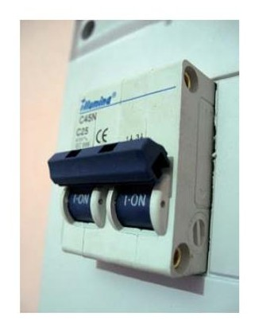
Control de calidad de ejecución: El plan debe establecer los procedimientos de control y aprobación para la calidad de ejecución de la instalación eléctrica. Este tipo de controles suele establecerse de forma diferente en función de las fases de obra, pues es lógico que aquellas fases relacionadas con conductores, conexiones y montajes de elemento requieran mayores controles que otras como replanteos o colocación de canalizaciones eléctricas. Así mismo quedarán establecidos los criterios de aprobación y los tipos de desperfectos o no conformidades que pueden darse para estas inspecciones, con objeto de que queden definidos los casos en que un contratista puede ser sancionado u obligado a la modificación de partes o la totalidad de partidas ejecutadas.
Así mismo se definirán los puntos de inspección de la obra.
Puntos de inspección
Los puntos de inspección serán aquellos momentos en que se debe garantizar la realización de controles destinados a garantizar la calidad. Dado que resulta imposible un 100 % de inspección de calidad, deben al menos establecerse aprobaciones por lotes o fases de obras, para evitar se que pueda seguir la ejecución de una obra sobre elementos defectuosos, o incluso evitar queden vicios ocultos que en fases posteriores de obra no puedan ya volver a ser inspeccionados.
Normalmente se tratará de que aquellas operaciones que son de gran relevancia desde el punto de vista de la estrategia global de la obra queden correctamente inspeccionados antes de permitir que la ejecución continúe.
Estas situaciones suelen darse:
Antes del tapado de canalizaciones, zanjas, levantamiento de muros que escondan huecos de instalaciones, etc.
En operaciones que resultan muy costosas proporcionalmente, como instalación de conductores, automatismos, etc.
En elementos de seguridad como fusibles, protecciones, etc.
En puntos lógicos de observación del proceso: por ejemplo antes del inicio de colocación de conductores, o de apertura de canalizaciones, etc.
En puntos significativos de instalaciones especiales, por el ejemplo colocación de sistemas solares, eólicos, robots o unidades de control robotizadas, persianas eléctricas, etc.
En relación con los puntos de inspección, determinados pliegos de condiciones establecen obligaciones respecto a ellos, pudiendo darse casos en que no se puedan certificar trabajos de fases posteriores hasta que no hayan quedado inspeccionados estos punto y se hayan validado y documentado. En este tipo de casos cobran vital importancia estos puntos dentro de la planificación y control de la ejecución de obra, pues podría producir importantes retrasos de certificación para nuestra organización caso de darse defectos en estos puntos o retrasarse por algún motivo su aprobación.
Protocolos de calidad
Los protocolos de calidad han proliferado extraordinariamente en los últimos años. Como tal no son un plan de calidad, sino la garantía de que nuestra organización opera basándose en procedimientos establecidos y que ejerce labores de documentación de los trabajos dentro de un sistema de gestión de calidad que incluirá en general los siguientes niveles de documentación:
Sistema de gestión de calidad/Manual de calidad
El manual de calidad será el resultado de todos los documentos destinados al correcto control de la documentación necesarios para el control de los procesos de operatividad y aseguramiento de la calidad de la misma. En general contendrá todos los documentos que se relacionan a continuación.
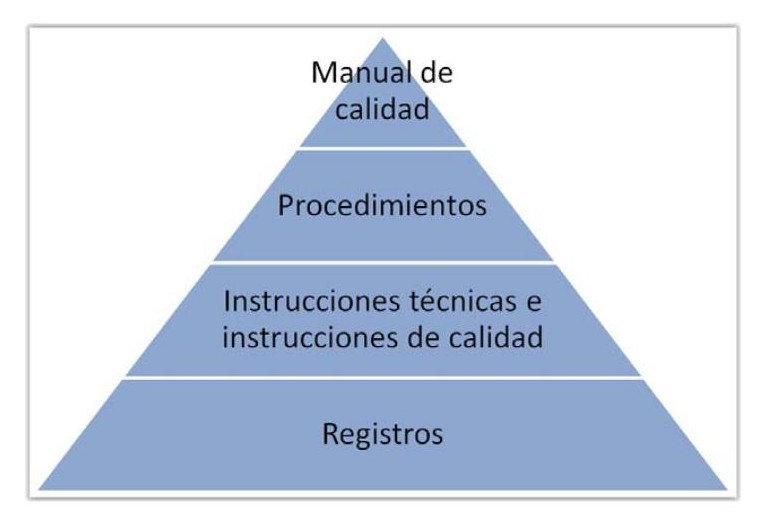
Procedimientos del sistema
Los procedimientos son documentos donde se establecerán las formas de actuación de la empresa. En general se dividen en capítulos, y en cada uno de ellos se relacionan todas las descripciones de formas de actuación de la empresa, criterios, requisitos, responsabilidades, etc.
Los procedimientos afectarán al nivel más alto de la organización, gerencia, directores de áreas, etc.
Procedimientos habituales de un manual de calidad pueden ser:
Política Empresarial
Objetivos
Definiciones del sistema
Gestión de documentación
Procedimientos administrativos
Procesos técnicos
Procesos de calidad
Revisiones del sistema
Procedimiento de formación continua
Instrucciones de calidad
Una instrucción es un documento donde se describe el modo en que debe realizarse un proceso concreto de la empresa. Desde el punto de vista genérico una instrucción tiene carácter procedimental, del mismo modo que los procedimientos, sólo que la instrucción será normalmente mucho más concreta para un único proceso de la empresa.
Por ejemplo, una instrucción de calidad puede describir únicamente cómo debe realizarse y documentarse una recepción de material de un proveedor, una homologación de un proveedor, etc. De modo que describirán un proceso concreto. Se destinará a sí mismo a un número reducido de recursos. En los ejemplos anteriores pueden ir destinados por ejemplo a la persona que realiza el control de calidad a la entrada, o al responsable de compras respectivamente. El motivo por el que se realizan las instrucciones de calidad de modo aparte a los procedimientos, es porque las instrucciones están más sujetas a cambios ante cualquier modificación, mientras los procedimientos, más genéricos, suelen permanecer estables durante más tiempo.
Por otro lado los destinatarios de las instrucciones técnicas serán más bien a nivel de operación de la empresa, es decir, empleados o responsables de actividades concretas como controladores de calidad, personal de almacén, etc.
Registros
Son los documentos donde propiamente se reflejan las informaciones de los procesos de la empresa. Ejemplos de registros pueden ser:
Documentos de entradas, salidas de productos
Partes de trabajo
Registros de control de calidad
Etc.
Su formato, alcance, etc. estará predefinido a través de los procedimientos e instrucciones del sistema de gestión de calidad, de modo que cada registro cumpla los objetivos descritos en estos procedimientos anteriormente definidos.
Cada vez son más habituales los registros que tienen formatos de check-list o listas de chequo, por su buena adaptación al cumplimiento de los requisitos procedimentales, legales, etc. a nivel de operación de la empresa.
Ejemplo de check-list de revisión de instalaciones
Acción correctiva
N Requisito Cumple No cumple
necesaria
| Protección contra contactos 1 directos | x |
|---|---|
| 2 Existencia red de tierras | x |
| Tomas de tierra en tomas de 3 corriente | x |
| Desconexión automática por 4 diferencial I<30 mA | x |
| Protección contra sobreintensi- 5 dades | x |
| 6 IGA < 25 A | x |
| 7 ICP | Necesario x instalar caja precintable |
En general, la mayor parte de empresas se acogen a certificados de calidad que les permitan asegurar la calidad de sus procesos documentales con objeto de competir en el mercado con esta garantía de calidad. Se distinguen las siguientes etapas:
Desarrollo de manual de calidad, procedimientos, instrucciones y registros.
Implantación mediante formación y control de la implantación.
Auditoría interna: se procede a evaluar y verificar los procedimientos implantados en base a una norma reconocida.
Inspección o auditoría interna: Se precede a verificar y evaluar el cumplimiento de la norma por parte de un inspector externo acreditado
La parte del proceso qué más afecta al departamento de producción es:
La redacción de los registros en base a las instrucciones y procedimientos de nuestro departamento.
Apertura y control de incidencias y gestión de las acciones correctivas e inmediatas.
Cierre del seguimiento de acciones correctivas.
A otros estamentos de la empresa como gerencia, competerá la emisión de políticas de calidad generales de la empresa, así como dotar de los medios necesarios para su cumplimiento. Se obligan las organizaciones a proponerse objetivos con plazos concretos en los que obtener estos logros y a la evaluación y seguimiento de los mismos, en materia de calidad, nivel de cumplimiento de los trabajos y contratos, respeto a normativas laborales y medioambientales, etc.
Los protocolos más extendidos dentro de estas características son los ISO 9000, ISO 14000, etc.
3.9. Recursos y documentación
Las obras de electricidad, por su importancia, relevancia y riesgos se entienden como instalaciones sometidas al control de su ejecución y mantenimiento e incluso a la supervisión por parte de las administraciones públicas. Las instalaciones eléctricas son elementos imprescindibles en los edificios, pero no es menos cierto que también son causa de numerosos accidentes dentro de ellos y la seguridad por tanto debe ser un principio muy importante para ellas.
No en vano la práctica totalidad de las instalaciones eléctricas está sometida a inscripción ante la administración. Por este motivo las empresas instaladoras, que también tienen obligación de estar inscritas para permitirse sus trabajos de ejecución debe mantener registro documental de los trabajos que ejecutan y tenerlos disponibles ante las administraciones u otros agentes implicados que así lo requieran.
Así mismo están obligadas a mantener una serie de recursos y elementos encaminados a garantizar que son competentes para la realización de instalaciones de este tipo.
Todo ello lleva a las organizaciones
ISO 9001
Es la más extendida de las normas de calidad desde el punto de vista de los procedimientos generales de documentación de empresas de todo tipo. Por su importancia relativa dentro de las normas de calidad y la gestión de documentación veremos aquí cuestiones generales de la norma y gestión documental requerida para las organizaciones que emplean esta norma.
Debido a la conveniencia de la estandarización entre todos los sistemas de calidad, los sistemas ISO pretenden unificar del mejor modo posible todas las necesidades de documentación y registros encaminados al aseguramiento de la calidad. Por este motivo, las normas ISO pretenden servir de modo análogo a empresas de muy diferentes sectores, unificando los sistemas de gestión.
La ISO 9001 es una norma internacional que se aplica a los sistemas de gestión de calidad (SGC) y que se centra en todos los elementos de administración de calidad con los que una empresa debe contar para tener un sistema efectivo que le permita administrar y mejorar la calidad de sus productos o servicios. Los clientes se inclinan por los proveedores que cuentan con esta acreditación porque de este modo se aseguran de que la empresa seleccionada disponga de un buen sistema de gestión de calidad (SGC). Esta acreditación demuestra que la organización está reconocida por más de 1.000.000 de empresas en todo el mundo.
La norma ISO 9001 es organizada en 8 secciones. Las secciones 4, 5, 6, 7 y 8 contienen los requisitos para su sistema de gestión de calidad (SGC). Las primeras 3 secciones de la norma (1, 2 y 3) no contienen requisitos, sólo definiciones del ámbito de aplicación, referencias a otras normativas que serán de prerrequisitos necesarios para las empresas (por ejemplo requisitos legales, etc.) y términos y definiciones necesarios para la posterior ejecución de la norma.
Estructura Organizativa de la norma:
Sección 1 - Ámbito
Sección 2 - Referencias normativas
Sección 3 - Términos
Sección 4 - Requisitos del Sistema
Sección 5 - Responsabilidades de la Dirección
Sección 6 - Gestión de Recursos
Sección 7 - Realización del Producto
Sección 8 - Medición, Análisis y Mejora
Es recomendable organizar la documentación de la empresa de manera análoga o similar a como la propia norma se estructura, es decir, que la empresa disponga también de estos conceptos de ámbito, referencias y definiciones y términos sobre su propio sistema de gestión de calidad y manual de calidad.
Habitualmente también se dedicará una sección del manual de calidad, a la definición de los procedimientos de gestión de la propia documentación, es decir, índice de la mismas, procedimiento de control de cambios en los formatos de los documentos y registros, responsables y frecuencia de actualización de la documentación, formato de registro de control de las ediciones y los cambios realizados sobre el propio manual, etc.
Encontrar documentos resultará más sencillo así no sólo para el personal de la organización, sino también a los auditores e inspectores externos.
Sección 4: Trata de los requisitos que se deben cumplimentar respecto de la documentación del Sistema de calidad (Manual de calidad, política, objetivos, procedimientos, documentos y registros). Los requisitos relativos a la política y objetivos de la organización deben ser medibles para poder evaluarse con datos objetivos los índices de cumplimiento de los mismos. Los procedimientos deben describir las formas de actuar de la empresa y los pasos que se siguen para el correcto registro documental de las acciones de la organización. Por último documentos y registros servirán de base documental para la consulta posterior de toda necesidad de datos a aportar a cualquier agente que requiera información acerca de las acciones de la organización.
Sección 5: Esta sección establece el compromiso de la dirección enfocada al cliente, estableciendo la política de calidad y los objetivos, designa las responsabilidades y autoridades correspondientes además del Representante de la Dirección y la frecuencia de las revisiones gerenciales. La gerencia de la empresa debe comprometerse a aportar los medios necesarios para el cumplimiento general de la norma y de las acciones correctivas que se planteen.
Sección 6: Esta relacionado con la gestión de recursos ya sean relacionados con los humanos, la infraestructura y el ambiente de trabajo necesario para la organización.
Sección 7: Esta sección es la más importante ya que establece como se va a fabricar el producto o brindar el servicio, teniendo en cuenta los requisitos
establecidos por el cliente, el diseño y desarrollo del producto, las compras, los montajes, los elementos de seguimiento y medición y todo aquello que está directamente relacionado con el negocio de la empresa.
Sección 8: Es importante mejorar continuamente a la organización y eso se realiza haciendo seguimiento y medición de la percepción del cliente, los procesos, el producto y auditorías internas, además de controlar el producto no conforme y tomas acciones correctivas y preventivas como medidas de mejora. Las medidas de mejora a su vez deben tener correcto seguimiento y resolución de las mismas, y deben ser efectivas en la resolución de incidencias, demostrando que un tipo de incidencia resuelta no vuelve a ocurrir reiteradas veces de modo similar.
Procedimiento de implantación y gestión de un sistema de calidad
Acostumbra a dividirse en seis etapas, del siguiente modo:
Sección 8 - Medición, Análisis y Mejora
Paso 1
Información
Paso 2
Planificación
Paso 3
Desarrollo
Paso 4
Capacitación
Paso 5
Auditoría interna
Paso 6
Auditoría Externa
Paso1 Información interna y externa
Contempla el recabar toda la información necesaria tanto de la norma como de los procesos a los que esta se va a aplicar. El objetivo es la evaluación de que la implantación de la norma es posible y conveniente para los intereses de la empresa y que a su vez resulte rentable y sostenible para la organización.
Paso 2 Planificación
Una vez decidida la conveniencia debe establecerse un plan que establezca plazos de implantación para cada una de las actividades necesarias para el logro del objetivo.
Paso 3 Desarrollo
La norma 9001 requiere que se documente su SGC. Es necesario desarrollar un Manual de calidad, así como los procedimientos requeridos para su sistema. Desarrollo MANUAL DE CALIDAD ROCEDIMIENTOS. Estos procedimientos habitualmente ya existirán en las empresas, pero deben documentarse y verificar que están suficientemente definidos conforme a la norma.
Paso 4 Capacitación
Todos los empleados deberán estar capacitados para trabajar con la norma ISO 9001. La capacitación incluirá la formación e información de cada responsable y recurso de la empresa para lograr que exista una correcta capacitación de cada uno a su puesto y responsabilidades.
Paso 5 Auditoría interna.
Es necesario demostrar que el sistema es eficaz. Deberá comprar su SGC con los requerimientos de la norma ISO 9001. Para ello se realizará de modo interno una auditoría que resulte un simulacro eficaz de verificación del cumplimiento de la norma en cada uno de sus requisitos, y que establezca medidas correctivas para aquellos requisitos que pueden no cumplirse completamente.
Paso 6 Auditoría Externa
Deberá contratar a un ORGANISMO DE CERTIFICACION que lleve a cabo una auditoría externa. Una vez realizada, el registro estará completo. La auditoría
externa garantizará el cumplimiento de los requisitos y someterá de nuevo a verificación de los mismos.
Completado el proceso de certificación cada organización deberá mantener actualizados sus documentos, de modo que se garantizará que el registro de las acciones de la empresa cumplirá todos los requisitos de registro de la norma y por ende los de tipo legal.
Clasificación de registros
ISO 14001
Esta norma tiene por objetivo mostrar el compromiso con el Medio Ambiente y el desarrollo sostenible por parte de la organización, tratando que la actividad de acción sostenible impacte positivamente en el éxito de la organización tanto a corto como largo plazo y proporcionando con ellos beneficios a la organización y al sostenimiento del planeta.
Se emplea también por la mejora de la imagen corporativa y la de sus clientes, así como sus relaciones tanto con la opinión pública como con las Administraciones y autoridades de su comunidad local.
Un mejor uso de la energía y la conservación del agua, una cuidadosa selección de las materias primas y un reciclaje controlado de los residuos, todo ello contribuye sustancialmente a un ahorro en costes que incrementa su ventaja competitiva.
Asegura el respeto a la legislación medioambiental y reduce el riesgo de multas y de posibles sanciones de Administraciones.
Mejora la calidad de los lugares de trabajo, la moral del empleado y su adhesión a los valores corporativos.
Estructura de la Norma
Prologo
Introducción
Objeto y campo de aplicación
Norma para consulta
Términos y definiciones
Requisitos del Sistema de Gestión Ambiental
4.1 Requisitos generales
4.2 Política ambiental
4.3 Planificación
4.4 Implementación y operación
4.5 Verificación
4.6 Revisión por la Dirección
ANEXO A (informativo)
Orientación para el uso de esta norma internacional
ANEXO B (informativo)
Correspondencia entre la norma ISO 14001:2004 y la norma ISO 9001:200
2)Requisitos del sistema de gestión
1) Objetivo y campo
3) Planificación
de aplicación
ambiental
Objeto y campo de aplicación
Pretende ser aplicable a cualquier empresa que pretenda incorporarla como mejora de su gestión ambiental, tratando de estandarizar los procedimientos a través de la norma.
Partes:
implementar, mantener y mejorar un sistema de gestión ambiental.
Asegurarse de su conformidad con su política ambiental establecida.
Demostrar tal conformidad a terceros.
Solicitar la certificación/registro de su sistema de gestión ambiental por una organización externa.
Realizar una autodeterminación y auto-declaración de conformidad con esta norma.
Requisitos del sistema de gestión ambiental
Política ambiental: el más alto nivel la definirá y asegurara que:
Sea apropiada para la naturaleza, la escala y los impactos ambientales de sus actividades, productos o servicios.
Incluya un compromiso para el mejoramiento continuo y la prevención de la contaminación.
Incluya un compromiso de cumplir con la legislación y las reglamentaciones ambientales pertinentes, y con otros requisitos a los que adhiera la organización.
Provea el marco para establecer y revisar los objetivos y las metas ambientales.
Sea documentada, implementada, mantenida y comunicada a todo el personal.
Esté disponible para el público.
› Definir una Política Ambiental por el más alto nivel de la Organización.
› Establecer y mantener procedimientos para identificar aspectos ambientales que puedan tener impactos significativos sobre el medio ambiente.
› Establecer y mantener procedimientos para identificar y acceder a los requerimientos legales que sean directamente aplicables a los aspectos ambientales identificados.
› Establecer y mantener objetivos y metas documentados.
› Establecer y mantener un programa para alcanzar los objetivos y metas establecidos.
› Definir documentar y comunicar roles, responsabilidades y autoridades para facilitar la gestión ambiental.
› Identificar necesidades de capacitación e impartirla en todo el personal cuyo trabajo pueda originar un impacto ambiental significativo.
› Establecer y mantener procedimientos para realizar comunicaciones internas y externas a la Organización, así como recibir, documentar y responder a las inquietudes de las partes interesadas.
› Establecer y mantener información para describir el sistema y correlacionar la documentación del mismo.
› Establecer y mantener procedimientos para controlar los documentos requeridos por la norma.
› Identificar las operaciones que estén asociadas a los aspectos ambientales significativos, planificarlas estableciendo y manteniendo procedimientos documentados para las mismas, que contengan criterios de operación.
› Establecer y mantener procedimientos para identificar el potencial para responder ante accidentes y situaciones de emergencia.
Sostenibilidad y medio ambiente
› Establecer y mantener procedimientos documentados el monitoreo y mediciones de las características clave de sus operaciones.
› Establecer y mantener procedimientos documentados para evaluar periódicamente el cumplimiento de los requisitos legales.
› Establecer y mantener procedimientos para el tratamiento de las no conformidades y la toma de acciones correctivas y preventivas
› Establecer y mantener procedimientos para la identificación, el mantenimiento y la disposición de registros ambientales.
› Establecer y mantener un programa y procedimientos para realizar auditorías periódicas del sistema.
› Revisar por parte del más alto nivel de la Organización, a intervalos determinados por la misma, la adecuación, aptitud y eficiencia del sistema.
Planificación
Aspectos ambientales
La organización establecerá y mantendrá procedimientos para identificar los aspectos ambientales de sus actividades, de modo de determinar aquellos que tengan o puedan tener impactos significativos sobre el medio ambiente. Deberá considerar los significativos cuando fije sus objetivos ambientales. Se conservara esta información actualizada.
Requisitos legales y de otro tipo (a los que ella suscriba)
La organización establecerá y mantendrá 1 procedimiento para identificar y tendrá acceso a los requisitos legales... que sean directamente aplicables a los aspectos ambientales de sus actividades.
Objetivos y metas
La organización los establecerá y mantendrá documentados
Consideraciones:
› Requisitos legales y de otro tipo.
› Aspectos ambientales significativos.
› Opciones tecnológicas.
› Requisitos financieros, operativos y comerciales.
› Puntos de vista de las partes interesadas.
› Deben incluir el compromiso para prevenir la contaminación.
Recuerda
En las normas de calidad los objetivos deben ser medibles para poder realizar la evaluación posterior de su grado de cumplimiento.
Programa de gestión ambiental
La organización establecerá y mantendrá 1o+ programas para cumplir sus objetivos y metas, incluyendo:
› a designación de la responsabilidad por el logro de los objetivos y metas en cada función y nivel pertinentes a la organización.
› los medios y los plazos para que ellos sean logrados.
Los programas serán rectificados cuando haya nuevos desarrollos.
4) Implementación y operación
Estructura y responsabilidad
Se definirán, documentarán y comunicarán roles, responsabilidades y autoridades para facilitar la gestión ambiental efectiva. La dirección proveerá recursos esenciales para su implementación y control. Se determinará 1o+ representantes de la dirección para:
› asegurar que los requisitos del sistema de gestión ambiental se hayan establecido e implementado, y sean mantenidos de acuerdo con esta norma.
› informar sobre el desempeño del sistema al directivo de más alto nivel para revisarlo y tomarlo como una base para mejorar el sistema.
Capacitación, toma de conciencia y competencia
Identificar necesidades de capacitación e impartirla en todo el personal cuyo trabajo pueda originar un impacto ambiental significativo. Establecerá y mantendrá procedimientos para que cada persona tome conciencia de:
› La importancia de cumplir con la política y los procedimientos ambientales, y con los requisitos del sistema.
› Los impactos ambientales significativos, reales o potenciales, derivados de sus actividades, y los beneficios ambientales surgidos de una mejora en su desempeño.
› Sus roles y responsabilidades para lograr cumplir con la política y los procedimientos ambientales, y con los requisitos del sistema, incluyendo los requisitos para la preparación y las respuestas ante emergencia.
› Las consecuencias potenciales del partimiento de los procedimientos operativos especificados.
Recuerda
Las normas ISO 9001 y 14001 son normas voluntarias para las empresas, pero por sus características y estandarización son las más extendidas en sus materias, aportando a las empresas la base para el control de la documentación en aspectos de calidad y medio ambiente, garantizando el cumplimiento de las normas legales así como mejorando la imagen de la empresa a clientes y otros agentes.
Manual de calidad y normas
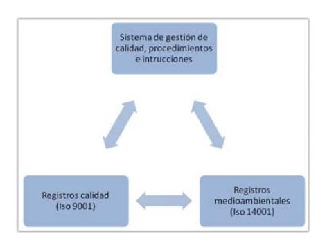
UD3 Lo más importante
El planning de obras es el documento básico empleado para la gestión del montaje de obras en un marco temporal.
El replanteo de obras es la serie de comprobaciones y señalizaciones de puntos significantes que se realizan para verificar la viabilidad del proyecto según planos al caso real.
Las tareas son las actividades necesarias para la realización de un montaje determinado y constituyan las actividades del proyecto.
Los MRP son planificaciones de materiales realizadas como parte separada de los recursos materiales necesarios para la realización del montaje originada en base al planning de obras.
Los recursos son los elementos necesarios para la realización de las actividades del planning de obras. Existirán recursos tipo trabajo y tipo material y se asignarán según tengan relevancia económica para la organización.
Los materiales auxiliares poseen un cálculo complejo al no encontrarse medidos de forma exhaustiva en mediciones, lo que obliga a las organizaciones a realizar las mejores estimaciones posibles de los mismos, siempre evitando que su escasez pueda generar retrasos y sobrecostes.
Los rendimientos son los valores que deben obtenerse de cada recurso en función de la unidad de obra o del tiempo en caso de recursos tipo trabajo. El control del cumplimiento de los rendimientos determinará el éxito económico de la obra.
El plan de calidad es la planificación que se realiza para garantizar el cumplimiento de los requisitos de las instalaciones a lo largo del proceso de montaje. Este plan establecerá las fases y procedimientos, asegurando la calidad en cada paso relevante, y evitando la continuidad de trabajos posteriores de no cumplirse una fase previa a través de los puntos de inspección.
Toda organización debe documentar los procedimientos y registrar sus actividades a través de registros para garantizar la calidad de los trabajos y permitir la revisión y justificación de cara a los agentes que puedan requerirlos.
Las normas más extendidas que pretenden lograr la estandarización de los sistemas de gestión de calidad en materia de calidad y medioambiente son las ISO 9001 y 14001 respectivamente.
UD3 Autoevaluación
1. ¿Cómo denominamos a un punto o suceso significante del proyecto?
a. Proceso.
b. Programación.
c. Tarea.
d. Hito.
2. ¿La acción de verificar a través de puntos de referencia la viabilidad del
proyecto en la realidad la conocemos por?
a. Recepción.
b. Verificación.
c. Replanteo.
d. Inspección.
3. ¿En general las actividades de un proyecto eléctrico serán independientes?
a. Sólo las intermedias.
b. Sólo en función de los recursos.
c. La mayoría sí.
d. La mayoría no.
4. ¿Qué palabra es origen del término proveedor?
a. Partner.
b. Proveer.
c. Prever.
d. Plan.
5. ¿Cómo se denomina a las fuentes o suministro que produce un beneficio para el proceso de producción?
a. Material.
b. Tareas.
c. Actividad.
d. Recurso.
6. ¿El material de empalme se encuentra incluido en las mediciones?
a. Se considera incluido en las mediciones como pequeño material o
indirecto, pero no medido.
b. Se mide y se factura aparte.
c. Si no está incluido no hay obligación de ponerlo.
d. NInguna es correcta.
7. ¿En tareas de trabajo fijo si se modifica el número de unidades de recursos qué dato se modifica?
a. El trabajo a realizar.
b. La duración de la tarea.
c. Ninguna.
d. a y b son correctas.
8. ¿Cómo llamamos a la necesidad de reorganizar tareas por incidencias
de tipo productivo?
a. Reordenación.
b. Reprogramación.
c. Secuenciación.
d. Ninguna de las anteriores.
9. ¿Dónde se definen los ensayos a realizar en un montaje de obras?
a. En las mediciones.
b. En los puntos de inspección.
c. En el plan de calidad .
d. Ninguna es correcta.
10. ¿Qué es una auditoría interna?
a. La auditoría que realiza un inspector de un organismo externo.
b. Una inspección administrativa.
c. Una auditoría previa a la de certificación realizada a nivel interno.
d. La evaluación inicial que hace un inspector externo.